B3 · GPT-6 Astra · attempt mpntvTE
Batch tb8 · job tb8_B_EXP22004363_run1_221202_gpt-6-astra · trial B_EXP22004363_run1_221202__mpntvTE. Long tool outputs are cut at 6,000 characters.
0.34
30.4
$16.05
124
110
task prompt (instruction.md)
<environment_context> <cwd>/task</cwd> <shell>bash</shell> <current_date>2026-11-06</current_date> <timezone>Etc/UTC</timezone> <filesystem><workspace_roots><root>/task</root></workspace_roots><permission_profile type="disabled"><file_system type="unrestricted" /></permission_profile></filesystem> </environment_context>
user message
# Caspase-3/7 conditioned-media plate (H4 WT / PGRN-KO): analyse, conclude, recommend
## Goal
You are the analyst for this experiment. Analyse the 80-well plate acquired on 02-Dec-2022, answer the plan's question, and recommend the next step. The plan's question is whether WT progranulin-conditioned media can bring caspase activity in H4 PGRN-KO lines (E1, E3) back toward WT levels.
## Inputs (read-only, `/task/inputs/`)
| Path | Content |
|---|---|
| `/task/inputs/plan.md` | Notebook entry up to flow acquisition: purpose, rationale, materials, protocol, cytometer settings, plate maps and their highlight colours. |
| `/task/inputs/plate_layout.csv` | One row per FCS file: `file, well, sample, cell_line, camptothecin, conditioned_media`. `sample` is the 2022-12-02 plate-map label as written. `conditioned_media` is transcribed from that map's highlight colours (blue = WT 24hr, green = WT 48hr, none = no conditioned media). `camptothecin` is `not stated` where the plate map gives no treatment. |
| `/task/inputs/start.flow` | Cytoflow workflow with the Import step already configured: 80 tubes, conditions `well`, `sample`, `cell_line`, `camptothecin`, `conditioned_media`. |
| `/task/inputs/raw/` | 80 FCS 3.1 files (Attune NxT), `Caspase-assay-2-mlk_caspase_Group_<well>.fcs`, wells A1-F12 and G1-G8. |
## Channels
- Cytoflow lists channels by the labels stored inside the FCS files, not by detector ID.
- These labels may be out of date.
- Use the plan's reagent list and cytometer settings to decide what each detector measured.
## Tools and rules
- **Cytoflow only.** All gating and counting must be done in the Cytoflow 1.3.2 GUI on screen.
- **Terminal.** It has no flow-cytometry libraries, and you must not parse FCS files from it. Use it only to:
- read the inputs;
- tabulate CSVs exported from Cytoflow;
- plot from those tables;
- write the deliverables.
- **Start.** File -> Open -> `/task/inputs/start.flow`, then answer **Yes** to run it. Use `cu paste` for paths.
- **Event subsampling.** Leave `Events per sample` on the Import step unset in the final workflow, so that counts use all events.
- **Save the workflow.** In Cytoflow, File -> Save as `/task/outputs/workflow.flow`. It must be the workflow whose gates produced `counts.csv`.
- **Output location.** Write every deliverable to `/task/outputs/`. Do not modify `/task/inputs/`.
- **Time budget.** About 5 hours.
## Deliverables (`/task/outputs/`)
### `workflow.flow`
The saved Cytoflow workflow. Every population in `counts.csv` except `all_events` must be a gate operation in this workflow with exactly the same name.
### `counts.csv`
- **Columns, in order:** `file, well, population, role, parent, count, pct_of_parent`.
- **Rows:** one row per file per population, for all 80 files, with the same set of populations for every file.
- **`all_events` row:** one per file, with `population` = `all_events`, `role` = `other`, `parent` = `none` and `pct_of_parent` empty.
- **`role`** must be one of `cells`, `singlets`, `live`, `marker_positive`, `other`. Each of `cells`, `singlets`, `live` and `marker_positive` is used by exactly one population, and that population is the same in every file. `marker_positive` is the assay read-out population. `other` may be used by any number of populations.
- **`parent`** is the name of the parent population; use `all_events` for a top-level gate.
- **`count`** is an integer event count taken from Cytoflow statistics on the saved gates.
- **`pct_of_parent`** = 100 x count / parent count.
### `flags.csv`
- **Columns, in order:** `file, well, issue_type, evidence, decision`.
- **Rows:** exactly one row per FCS file (80 rows). If a well has several issues, report the main one and mention the others in `evidence`.
- **`issue_type`** must be one of `none`, `clog`, `ran_dry`, `too_few_events`, `saturation`, `bad_control`, `mislabel`, `other`.
- **`decision`** must be one of `keep`, `keep_with_note`, `exclude`. Rows with `issue_type` = `none` must have `decision` = `keep`.
- **`evidence`** is required whenever `issue_type` is not `none`, and must cite at least one number from the data. It may be empty when `issue_type` = `none`.
### `condition_summary.csv`
- **Columns, in order:** `condition, wells, n_wells_used, mean, sd, metric_definition, normalisation_applied`.
- **`condition`** is a name you choose.
- **`wells`** lists the plate wells used, separated by `;`, e.g. `A1;D1`.
- **`n_wells_used`** is an integer.
- **`mean`** and **`sd`** are computed across the wells used. Leave `sd` empty when n = 1.
- **`metric_definition`** states the per-well metric, including numerator and denominator populations and units.
- **`normalisation_applied`** describes any normalisation, or says `none`.
### `figure.png`
The main result chart.
### `report.md`
Use these headings, in this order: `## Question`, `## Methods`, `## Results`, `## Conclusion`, `## Caveats`, `## Recommendation`.
### `answer.json`
```
{"question": str,
"comparisons": [{"comparison": str, "a": <condition>, "b": <condition>,
"direction": "increase"|"decrease"|"no_clear_change",
"magnitude": str, "confidence": "high"|"medium"|"low"}],
"overall_answer": "yes: ..." | "partial: ..." | "no: ...",
"assay_verdict": "fit_for_purpose"|"needs_optimisation"|"not_fit_for_purpose",
"next_action": <ACTION>,
"next_change": {"what": str, "from": str, "to": str, "why": str},
"excluded_wells": [well, ...],
"caveats": [str, ...]}
```
- **`comparisons`:** at least one. `a` and `b` must be `condition` values that appear in `condition_summary.csv`.
- **`direction`** describes `b` relative to `a`: `increase` means b > a.
- **`magnitude`:** give the size of the difference with a number and its unit.
- **`overall_answer`** must start with `yes:`, `partial:` or `no:`.
- **`next_action`** must be one of `proceed_as_planned`, `repeat_unchanged`, `repeat_with_change`, `optimise_reagent_or_setting`, `change_treatment_or_timing`, `switch_assay`, `stop`.
- `next_change`: the change you recommend, as an object: `what` (the step, reagent or condition to change), `from` (its value as run), `to` (the value you recommend) and `why`. Use empty strings if you recommend no change.
- **`excluded_wells`** must equal the set of wells with `decision` = `exclude` in `flags.csv`.
---
## How you operate this computer
You work from a **terminal** (bash, working directory `/task`). The analysis program, **Cytoflow 1.3.2**, is already running on a virtual screen (1440×900). You see and control that screen with the `cu` command:
| Command | What it does |
|---|---|
| `cu screenshot /tmp/screen.png` | Save a screenshot. Then **open/view the image file** to see the screen. |
| `cu click X Y` · `cu click X Y right` · `cu click X Y double` | Mouse click at pixel X,Y |
| `cu drag X1 Y1 X2 Y2` · `cu move X Y` · `cu scroll X Y down 3` | Drag, move, scroll |
| `cu type "text"` · `cu paste "text"` · `cu key ctrl+s` | Keyboard (use `cu paste` for file paths) |
Take a fresh screenshot after actions to check what happened.
- **Cytoflow.** If a "Welcome to Cytoflow!" dialog is showing, close it. In file dialogs, paste the full path (e.g. `/task/inputs/start.flow`) into the *File name* box.
- **Gating must be done in Cytoflow on screen.** Do not install or use flow-cytometry libraries (flowkit, flowio, fcsparser, FlowCytometryTools, the cytoflow Python API, etc.) to gate or count events. Python (numpy, pandas, matplotlib, openpyxl) is available for working with exported tables and writing reports.
- **Inputs** are in `/task/inputs/` (read-only). **Write every deliverable to `/task/outputs/`.** Only that folder is collected for grading.
- **Limits.** There is no limit on the number of actions; the only limit is the time budget above. Save `workflow.flow` and your output files early and often.
text(await tools.exec_command({cmd:"pwd && rg --files /task/inputs /task | head -100","max_output_tokens":4000}));
text(ALL_TOOLS.filter(x=>/computer|terminal|screen/.test(x.name+" "+x.description)).map(x=>({name:x.name,description:x.description.slice(0,120)})).slice(0,80));
Script completed
Wall time 0.1 seconds
Output:
{"chunk_id":"668878","wall_time_seconds":0.000003164,"exit_code":0,"original_token_count":1407,"output":"/task\n/task/inputs/start.flow\n/task/inputs/start.flow\n/task/inputs/plate_layout.csv\n/task/inputs/plate_layout.csv\n/task/inputs/plan.md\n/task/inputs/plan.md\n/task/inputs/raw/Caspase-assay-2-mlk_caspase_Group_E3.fcs\n/task/inputs/raw/Caspase-assay-2-mlk_caspase_Group_C3.fcs\n/task/inputs/raw/Caspase-assay-2-mlk_caspase_Group_D2.fcs\n/task/inputs/raw/Caspase-assay-2-mlk_caspase_Group_F2.fcs\n/task/inputs/raw/Caspase-assay-2-mlk_caspase_Group_B8.fcs\n/task/inputs/raw/Caspase-assay-2-mlk_caspase_Group_B6.fcs\n/task/inputs/raw/Caspase-assay-2-mlk_caspase_Group_B7.fcs\n/task/inputs/raw/Caspase-assay-2-mlk_caspase_Group_B9.fcs\n/task/inputs/raw/Caspase-assay-2-mlk_caspase_Group_B5.fcs\n/task/inputs/raw/Caspase-assay-2-mlk_caspase_Group_G2.fcs\n/task/inputs/raw/Caspase-assay-2-mlk_caspase_Group_G1.fcs\n/task/inputs/raw/Caspase-assay-2-mlk_caspase_Group_A4.fcs\n/task/inputs/raw/Caspase-assay-2-mlk_caspase_Group_D1.fcs\n/task/inputs/raw/Caspase-assay-2-mlk_caspase_Group_C1.fcs\n/task/inputs/raw/Caspase-assay-2-mlk_caspase_Group_E1.fcs\n/task/inputs/raw/Caspase-assay-2-mlk_caspase_Group_F3.fcs\n/task/inputs/raw/Caspase-assay-2-mlk_caspase_Group_C12.fcs\n/task/inputs/raw/Caspase-assay-2-mlk_caspase_Group_E12.fcs\n/task/inputs/raw/Caspase-assay-2-mlk_caspase_Group_D11.fcs\n/task/inputs/raw/Caspase-assay-2-mlk_caspase_Group_C10.fcs\n/task/inputs/raw/Caspase-assay-2-mlk_caspase_Group_E10.fcs\n/task/inputs/raw/Caspase-assay-2-mlk_caspase_Group_C11.fcs\n/task/inputs/raw/Caspase-assay-2-mlk_caspase_Group_F11.fcs\n/task/inputs/raw/Caspase-assay-2-mlk_caspase_Group_F12.fcs\n/task/inputs/raw/Caspase-assay-2-mlk_caspase_Group_G3.fcs\n/task/inputs/raw/Caspase-assay-2-mlk_caspase_Group_F1.fcs\n/task/inputs/raw/Caspase-assay-2-mlk_caspase_Group_E5.fcs\n/task/inputs/raw/Caspase-assay-2-mlk_caspase_Group_A3.fcs\n/task/inputs/raw/Caspase-assay-2-mlk_caspase_Group_A2.fcs\n/task/inputs/raw/Caspase-assay-2-mlk_caspase_Group_F6.fcs\n/task/inputs/raw/Caspase-assay-2-mlk_caspase_Group_C2.fcs\n/task/inputs/raw/Caspase-assay-2-mlk_caspase_Group_E2.fcs\n/task/inputs/raw/Caspase-assay-2-mlk_caspase_Group_B10.fcs\n/task/inputs/raw/Caspase-assay-2-mlk_caspase_Group_C9.fcs\n/task/inputs/raw/Caspase-assay-2-mlk_caspase_Group_E9.fcs\n/task/inputs/raw/Caspase-assay-2-mlk_caspase_Group_D8.fcs\n/task/inputs/raw/Caspase-assay-2-mlk_caspase_Group_F9.fcs\n/task/inputs/raw/Caspase-assay-2-mlk_caspase_Group_E7.fcs\n/task/inputs/raw/Caspase-assay-2-mlk_caspase_Group_D9.fcs\n/task/inputs/raw/Caspase-assay-2-mlk_caspase_Group_A10.fcs\n/task/inputs/raw/Caspase-assay-2-mlk_caspase_Group_A1.fcs\n/task/inputs/raw/Caspase-assay-2-mlk_caspase_Group_F5.fcs\n/task/inputs/raw/Caspase-assay-2-mlk_caspase_Group_C5.fcs\n/task/inputs/raw/Caspase-assay-2-mlk_caspase_Group_E8.fcs\n/task/inputs/raw/Caspase-assay-2-mlk_caspase_Group_E4.fcs\n/task/inputs/raw/Caspase-assay-2-mlk_caspase_Group_C4.fcs\n/task/inputs/raw/Caspase-assay-2-mlk_caspase_Group_E6.fcs\n/task/inputs/raw/Caspase-assay-2-mlk_caspase_Group_C6.fcs\n/task/inputs/raw/Caspase-assay-2-mlk_caspase_Group_C8.fcs\n/task/inputs/raw/Caspase-assay-2-mlk_caspase_Group_C7.fcs\n/task/inputs/raw/Caspase-assay-2-mlk_caspase_Group_D3.fcs\n/task/inputs/raw/Caspase-assay-2-mlk_caspase_Group_E3.fcs\n/task/inputs/raw/Caspase-assay-2-mlk_caspase_Group_D5.fcs\n/task/inputs/raw/Caspase-assay-2-mlk_caspase_Group_F8.fcs\n/task/inputs/raw/Caspase-assay-2-mlk_caspase_Group_F4.fcs\n/task/inputs/raw/Caspase-assay-2-mlk_caspase_Group_A11.fcs\n/task/inputs/raw/Caspase-assay-2-mlk_caspase_Group_A12.fcs\n/task/inputs/raw/Caspase-assay-2-mlk_caspase_Group_F7.fcs\n/task/inputs/raw/Caspase-assay-2-mlk_caspase_Group_D4.fcs\n/task/inputs/raw/Caspase-assay-2-mlk_caspase_Group_D7.fcs\n/task/inputs/raw/Caspase-assay-2-mlk_caspase_Group_F10.fcs\n/task/inputs/raw/Caspase-assay-2-mlk_caspase_Group_D6.fcs\n/task/inputs/raw/Caspase-assay-2-mlk_caspase_Group_A8.fcs\n/task/inputs/raw/Caspase-assay-2-mlk_caspase_Group_A7.fcs\n/task/inputs/raw/Caspase-assay-2-mlk_caspase_Group_A6.fcs\n/task/inputs/raw/Caspase-assay-2-mlk_caspase_Group_D10.fcs\n/task/inputs/raw/Caspase-assay-2-mlk_caspase_Group_G7.fcs\n/task/inputs/raw/Caspase-assay-2-mlk_caspase_Group_G6.fcs\n/task/inputs/raw/Caspase-assay-2-mlk_caspase_Group_G5.fcs\n/task/inputs/raw/Caspase-assay-2-mlk_caspase_Group_D12.fcs\n/task/inputs/raw/Caspase-assay-2-mlk_caspase_Group_E11.fcs\n/task/inputs/raw/Caspase-assay-2-mlk_caspase_Group_C3.fcs\n/task/inputs/raw/Caspase-assay-2-mlk_caspase_Group_B4.fcs\n/task/inputs/raw/Caspase-assay-2-mlk_caspase_Group_B2.fcs\n/task/inputs/raw/Caspase-assay-2-mlk_caspase_Group_G4.fcs\n/task/inputs/raw/Caspase-assay-2-mlk_caspase_Group_D2.fcs\n/task/inputs/raw/Caspase-assay-2-mlk_caspase_Group_B3.fcs\n/task/inputs/raw/Caspase-assay-2-mlk_caspase_Group_G8.fcs\n/task/inputs/raw/Caspase-assay-2-mlk_caspase_Group_F2.fcs\n/task/inputs/raw/Caspase-assay-2-mlk_caspase_Group_B1.fcs\n/task/inputs/raw/Caspase-assay-2-mlk_caspase_Group_B8.fcs\n/task/inputs/raw/Caspase-assay-2-mlk_caspase_Group_A9.fcs\n/task/inputs/raw/Caspase-assay-2-mlk_caspase_Group_B6.fcs\n/task/inputs/raw/Caspase-assay-2-mlk_caspase_Group_A5.fcs\n/task/inputs/raw/Caspase-assay-2-mlk_caspase_Group_B7.fcs\n/task/inputs/raw/Caspase-assay-2-mlk_caspase_Group_B11.fcs\n/task/inputs/raw/Caspase-assay-2-mlk_caspase_Group_B9.fcs\n/task/inputs/raw/Caspase-assay-2-mlk_caspase_Group_B5.fcs\n/task/inputs/raw/Caspase-assay-2-mlk_caspase_Group_G2.fcs\n/task/inputs/raw/Caspase-assay-2-mlk_caspase_Group_G1.fcs\n/task/inputs/raw/Caspase-assay-2-mlk_caspase_Group_A4.fcs\n/task/inputs/raw/Caspase-assay-2-mlk_caspase_Group_D1.fcs\n/task/inputs/raw/Caspase-assay-2-mlk_caspase_Group_C1.fcs\n/task/inputs/raw/Caspase-assay-2-mlk_caspase_Group_E1.fcs\n"}
[{"name":"web__run","description":"Tool for accessing the internet.\n\n\n---\n\n## Examples of different commands avai
… [47 more characters not shown]const r=await tools.exec_command({cmd:"cat /task/inputs/plan.md /task/inputs/plate_layout.csv","max_output_tokens":16000});text(r.output);
text(await tools.exec_command({cmd:"mkdir -p /task/outputs && cu screenshot /tmp/screen.png","max_output_tokens":1000}));
image((await tools.view_image({path:"/tmp/screen.png"})).image_url);
Script completed Wall time 0.1 seconds Output:
# EXP22004363 | 2022.11.28 Caspase Activity Assay Dev: Progranulin Conditioned Media This is the notebook entry text up to flow acquisition on 2022-12-02. People's names have been removed. - **Tags:** Target PGRN; Technology Assay development; Model System Cell based; Methodology Flow; Cell Type H4. - **Plate maps:** shown below as grids (rows A-H, columns 1-12). Empty cells are blank. - **Highlight colours:** the notebook encodes conditioned-media treatment by highlight colour. The colours are listed at the end. ## DAY 2022-11-28 ### Purpose To determine if progranulin conditioned media can restore wild-type levels of caspase activity in H4 GRN KO cells. ### Rationale Previous literature evidence suggests that applying exogenous progranulin to cells can restore molecular phenotypes in progranulin deficient lines. Our previous experiment with caspase activity on H4 GRN WT and KO cells showed that GRN KO lines had increased caspase activity. This difference was enhanced after campothesin challenge in both GRN WT and KO cells ( ). In this experiment, we will determine if applying conditioned media from WT cell lines onto KO lines can reduce caspase activity closer to WT levels. ### Materials - H4 WT cells - H4 PGRN KO E1 - H4 PGRN KO E3 - H4 media (DMEM + 10% FBS) - CellEvent Caspase-3/7 Green Flow Cytometry Assay Kit - Camptothecin - Plate 10k cells according to plate: | | 1 | 2 | 3 | 4 | 5 | 6 | 7 | 8 | 9 | 10 | 11 | 12 | |---|---|---|---|---|---|---|---|---|---|---|---|---| | A | WT | WT | WT | WT | WT | WT | WT | WT | WT | | | | | B | WT | WT | WT | WT | WT | WT | WT | WT | WT | | | | | C | WT | WT | WT | WT | WT | WT | WT | WT | WT | | | | | D | WT | WT | WT | WT | WT | WT | WT | WT | WT | | | | | E | E1 | E1 | E1 | E1 | E1 | E1 | E1 | E1 | E1 | | | | | F | E3 | E3 | E3 | E3 | E3 | E3 | E3 | E3 | E3 | | | | | G | | | | | | | | | Serum free media | | | | | H | 24 hr | | | | 48 hr | | | | | | | | - WT-330K for 33 wells-resuspend in 3300mL - E1 and E3-90K for 9 wells-resuspend in 900uL ## DAY 2022-11-29 - Harvest media after 24 and 48 hrs and place in 4 C until ready to use. ## DAY 2022-11-30 - Plate cells according to the following plate map and incubate at 37C: | | 1 | 2 | 3 | 4 | 5 | 6 | 7 | 8 | 9 | 10 | 11 | 12 | |---|---|---|---|---|---|---|---|---|---|---|---|---| | A | WT | WT | WT | WT | WT | WT | WT | WT | WT | WT | WT | WT | | B | E1 | E1 | E1 | E1 | E1 | E1 | E1 | E1 | E1 | E1 | E1 | E1 | | C | E3 | E3 | E3 | E3 | E3 | E3 | E3 | E3 | E3 | E3 | E3 | E3 | | D | WT | WT | WT | WT | WT | WT | WT | WT | WT | WT | WT | WT | | E | E1 | E1 | E1 | E1 | E1 | E1 | E1 | E1 | E1 | E1 | E1 | E1 | | F | E3 | E3 | E3 | E3 | E3 | E3 | E3 | E3 | E3 | E3 | E3 | E3 | | G | WT no treatment | WT no treatment | E3 no treatment | E3 no treatment | | | | | | | | | | H | E1 no treatment | E1 no treatment | WT (flow control) | WT (flow control) | | | | | | | | | ## DAY 2022-12-01 - Gently wash cells with DMEM. - Replace media with conditioned media collected previously. Conditioned media added at 9AM ## DAY 2022-12-02 - After 24 hours, add campthothesin according to the plate map: | | 1 | 2 | 3 | 4 | 5 | 6 | 7 | 8 | 9 | 10 | 11 | 12 | |---|---|---|---|---|---|---|---|---|---|---|---|---| | A | WT 10uM | WT 5uM | WT 2uM | WT DMSO | WT 10uM | WT 5uM | WT 2uM | WT DMSO | WT 10uM | WT 5uM | WT 2uM | WT DMSO | | B | E1 10uM | E1 5uM | E1 2uM | E1 DMSO | E1 10uM | E1 5uM | E1 2uM | E1 DMSO | E1 10uM | E1 5uM | E1 2uM | E1 DMSO | | C | E3 10uM | E3 5uM | E3 2uM | E3 DMSO | E3 10uM | E3 5uM | E3 2uM | E3 DMSO | E3 10uM | E3 5uM | E3 2uM | E3 DMSO | | D | WT 10uM | WT 5uM | WT 2uM | WT DMSO | WT 10uM | WT 5uM | WT 2uM | WT DMSO | WT 10uM | WT 5uM | WT 2uM | WT DMSO | | E | E1 10uM | E1 5uM | E1 2uM | E1 DMSO | E1 10uM | E1 5uM | E1 2uM | E1 DMSO | E1 10uM | E1 5uM | E1 2uM | E1 DMSO | | F | E3 10uM | E3 5uM | E3 2uM | E3 DMSO | E3 10uM | E3 5uM | E3 2uM | E3 DMSO | E3 10uM | E3 5uM | E3 2uM | E3 DMSO | | G | WT no treatment (no stain) | WT no treatment | E3 no treatment | E3 no treatment | E1 no treatment | E1 no treatment | WT (caspase stain only) | WT (L/D stain only) | | | | | | H | | | | | | | | | | | | | - Blue highlight=treated with WT 24hr conditoned media - Green highlight= treated with WT 48hr conditioned media - No highlight= no conditioned media treatment - Incubate and run flow. - Aspirate media and wash with PBS - Add 150uL trypsin incubate for 5min - Add 75uL FBS and collect into 96w round bottom plate - spin down 200xg for 5min - Add 200uL of Cell Event Caspase 3/7 Detection reagent (1:1000) in flow staining buffer. Incubate for 30min at 37C - Prepare SYTOX AAdvanced Dead Cell Stain at 100uM concentration by adding 1000uL DMSO to stain. Mix well - During the final 5 minutes of 30min Caspase incubation add 2uL of the 100uM Dead Cell stain (final concentration of 1uM) - Analyze the samples without fixing. Flow cytometer settings: FSC-20; SSC-290; BL1 (caspase)-225, BL2 (AAddvanced Dead Cell Stain)-350 ## Plate-map cell colours (from the notebook's highlighting; the plain-text maps above drop colour) ### Plate map of 2022-11-28 - row A: WT [light cyan #C2EDF8] x8 (cols 1-8) | WT (col 9, no highlight) | - | - | - - row B: WT [light cyan #C2EDF8] x8 (cols 1-8) | WT (col 9, no highlight) | - | - | - - row C: WT [light cyan #C2EDF8] x8 (cols 1-8) | WT (col 9, no highlight) | - | - | - - row D: WT [light green #E8F9CF] x8 (cols 1-8) | WT (col 9, no highlight) | - | - | - - row E: E1 [light green #E8F9CF] x8 (cols 1-8) | E1 (col 9, no highlight) | - | - | - - row F: E3 [light green #E8F9CF] x8 (cols 1-8) | E3 (col 9, no highlight) | - | - | - - row G: cols 1-8 empty | Serum free media (col 9) | - | - | - - row H: 24 hr (col 1) | - | - | - | 48 hr (col 5) | remaining cols empty ### Plate map of 2022-11-30 - rows A-C: cols 1-8 [light cyan #C2EDF8], cols 9-12 no highlight (A = WT, B = E1, C = E3) - rows D-F: cols 1-8 [light green #E8F9CF], cols 9-12 no highlight (D = WT, E = E1, F = E3) - r … [7,436 more characters not shown]
{"chunk_id":"50c150","wall_time_seconds":0.000003775,"exit_code":0,"original_token_count":4,"output":"/tmp/screen.png\n"}
text(await tools.exec_command({cmd:"cu click 920 492 && cu click 91 65 && cu paste /task/inputs/start.flow && cu key enter && cu screenshot /tmp/screen.png","max_output_tokens":1000}));image((await tools.view_image({path:"/tmp/screen.png"})).image_url);
Script completed Wall time 1.6 seconds Output:
{"chunk_id":"e5cb98","wall_time_seconds":1.456354348,"exit_code":0,"original_token_count":28,"output":"(symbol) No such key name 'enter'. Ignoring it.\n(symbol) No such key name 'enter'. Ignoring it.\n/tmp/screen.png\n"}
text(await tools.exec_command({cmd:"cu click 1307 745 && cu screenshot /tmp/screen.png","max_output_tokens":1000}));image((await tools.view_image({path:"/tmp/screen.png"})).image_url);
Script completed Wall time 0.2 seconds Output:
{"chunk_id":"875b39","wall_time_seconds":0.015647458,"exit_code":0,"original_token_count":4,"output":"/tmp/screen.png\n"}
text(await tools.exec_command({cmd:"cu screenshot /tmp/screen.png","max_output_tokens":1000}));image((await tools.view_image({path:"/tmp/screen.png"})).image_url);
Script completed Wall time 0.1 seconds Output:
{"chunk_id":"1d40b9","wall_time_seconds":0.000003926,"exit_code":0,"original_token_count":4,"output":"/tmp/screen.png\n"}
text(await tools.exec_command({cmd:"cu click 1319 745 && cu key Return && cu screenshot /tmp/screen.png","max_output_tokens":1000}));image((await tools.view_image({path:"/tmp/screen.png"})).image_url);
Script completed Wall time 0.2 seconds Output:
{"chunk_id":"8b9c30","wall_time_seconds":0.023137476,"exit_code":0,"original_token_count":4,"output":"/tmp/screen.png\n"}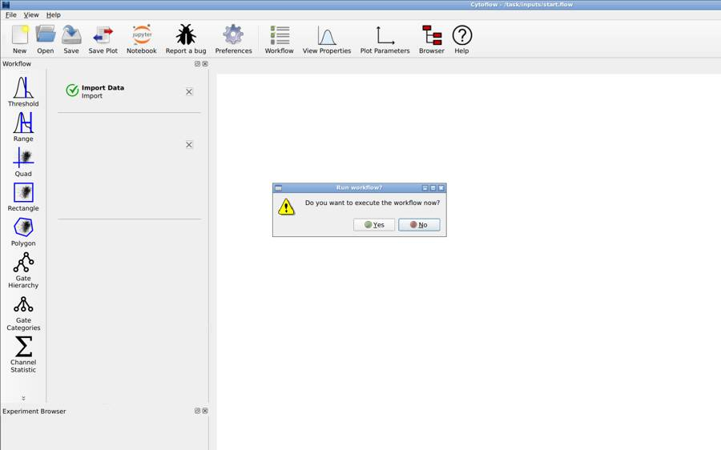
text(await tools.exec_command({cmd:"cu click 750 452 && cu screenshot /tmp/screen.png","max_output_tokens":1000}));image((await tools.view_image({path:"/tmp/screen.png"})).image_url);
Script completed Wall time 0.2 seconds Output:
{"chunk_id":"fe588f","wall_time_seconds":0.00658476,"exit_code":0,"original_token_count":4,"output":"/tmp/screen.png\n"}
text(await tools.exec_command({cmd:"sleep 3 && cu screenshot /tmp/screen.png","max_output_tokens":1000}));image((await tools.view_image({path:"/tmp/screen.png"})).image_url);
Script completed Wall time 3.1 seconds Output:
{"chunk_id":"4acddd","wall_time_seconds":2.902366829,"exit_code":0,"original_token_count":4,"output":"/tmp/screen.png\n"}text(await tools.exec_command({cmd:"cu click 240 181 && cu click 20 30 && sleep 1 && cu screenshot /tmp/screen.png","max_output_tokens":1000}));image((await tools.view_image({path:"/tmp/screen.png"})).image_url);
Script completed Wall time 1.3 seconds Output:
{"chunk_id":"d18b42","wall_time_seconds":1.113612052,"exit_code":0,"original_token_count":4,"output":"/tmp/screen.png\n"}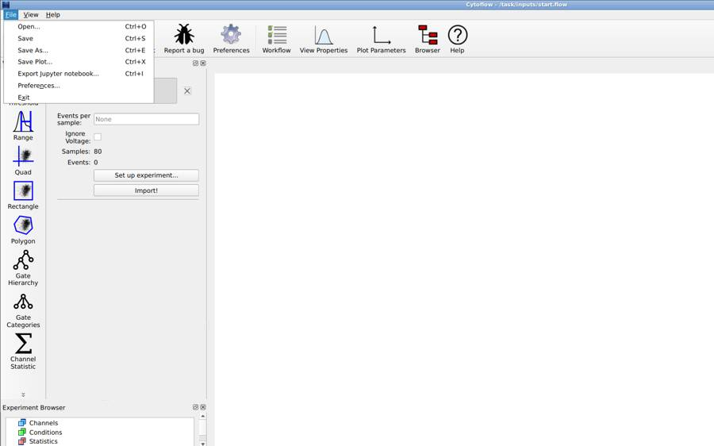
text(await tools.exec_command({cmd:"cu click 74 102 && sleep 0.4 && cu paste /task/outputs/workflow.flow && cu key Return && sleep 1 && cu screenshot /tmp/screen.png","max_output_tokens":1000}));image((await tools.view_image({path:"/tmp/screen.png"})).image_url);
Script completed Wall time 2.9 seconds Output:
{"chunk_id":"40d25c","wall_time_seconds":2.755740048,"exit_code":0,"original_token_count":4,"output":"/tmp/screen.png\n"}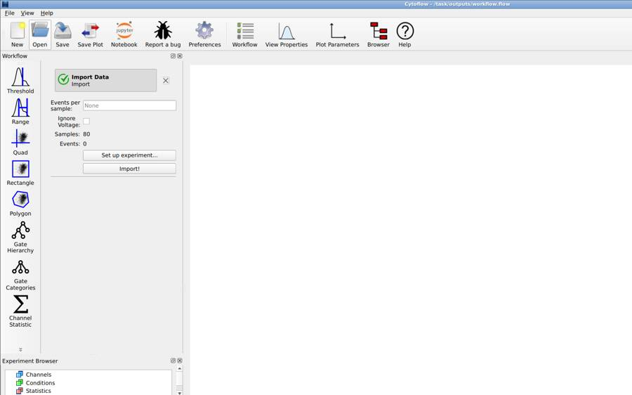
text(await tools.exec_command({cmd:"cu click 300 385 && sleep 15 && cu screenshot /tmp/screen.png","max_output_tokens":1000}));image((await tools.view_image({path:"/tmp/screen.png"})).image_url);
Script completed Wall time 10.2 seconds Output:
{"chunk_id":"ea0858","wall_time_seconds":10.000550712,"session_id":13331,"original_token_count":0,"output":""}text(await tools.write_stdin({session_id:13331,chars:"",yield_time_ms:10000,max_output_tokens:1000}));image((await tools.view_image({path:"/tmp/screen.png"})).image_url);
Script completed Wall time 1.6 seconds Output:
{"chunk_id":"c78efa","wall_time_seconds":1.584468282,"exit_code":0,"original_token_count":4,"output":"/tmp/screen.png\n"}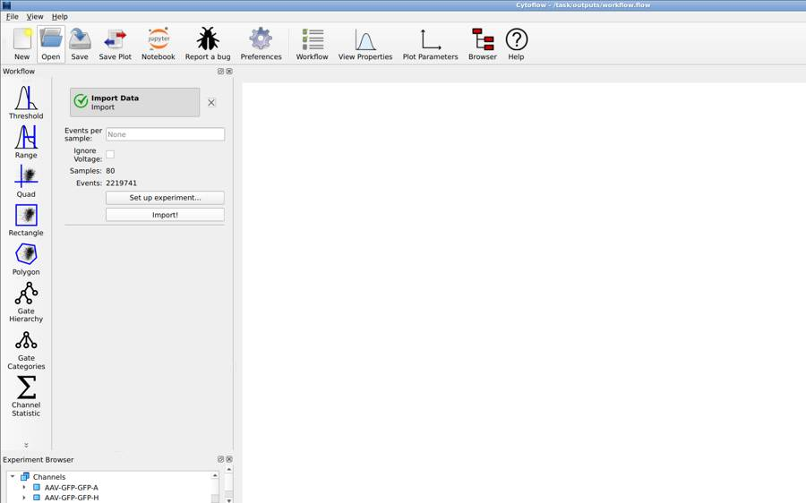
text(await tools.exec_command({cmd:"cu click 48 457 && sleep 1 && cu screenshot /tmp/screen.png","max_output_tokens":1000}));image((await tools.view_image({path:"/tmp/screen.png"})).image_url);
Script completed Wall time 1.2 seconds Output:
{"chunk_id":"f106bc","wall_time_seconds":1.00919359,"exit_code":0,"original_token_count":4,"output":"/tmp/screen.png\n"}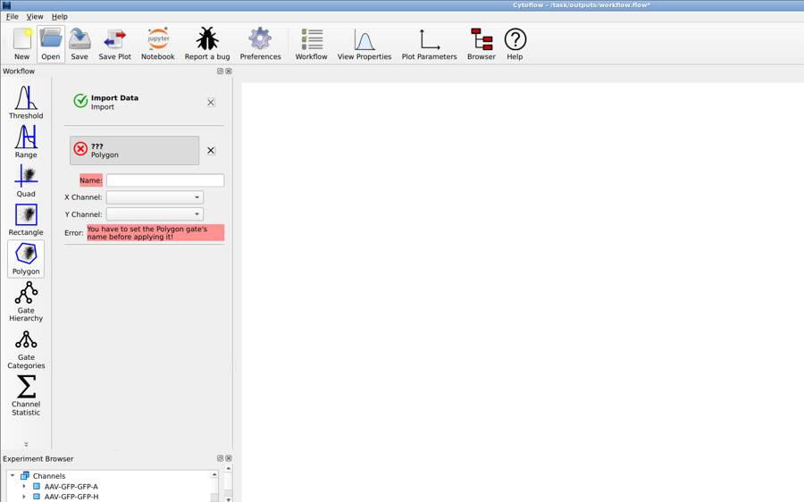
text(await tools.exec_command({cmd:"cu click 276 324 && cu type cells && cu click 346 353 && sleep 0.3 && cu screenshot /tmp/screen.png","max_output_tokens":1000}));image((await tools.view_image({path:"/tmp/screen.png"})).image_url);
Script completed Wall time 0.7 seconds Output:
{"chunk_id":"b9503a","wall_time_seconds":0.54596827,"exit_code":0,"original_token_count":4,"output":"/tmp/screen.png\n"}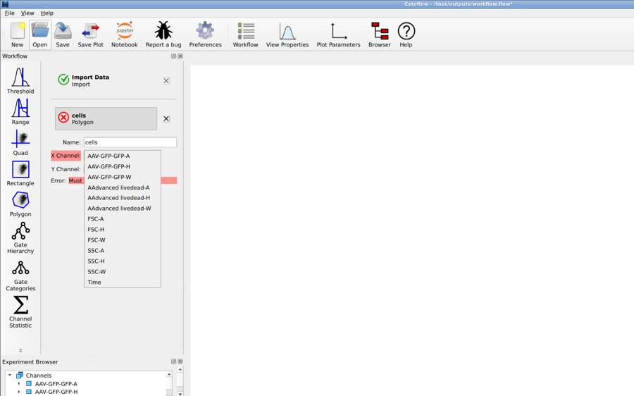
text(await tools.exec_command({cmd:"cu click 224 497 && cu click 350 383 && sleep 0.2 && cu screenshot /tmp/screen.png","max_output_tokens":1000}));image((await tools.view_image({path:"/tmp/screen.png"})).image_url);
Script completed Wall time 0.5 seconds Output:
{"chunk_id":"75a19d","wall_time_seconds":0.315849015,"exit_code":0,"original_token_count":4,"output":"/tmp/screen.png\n"}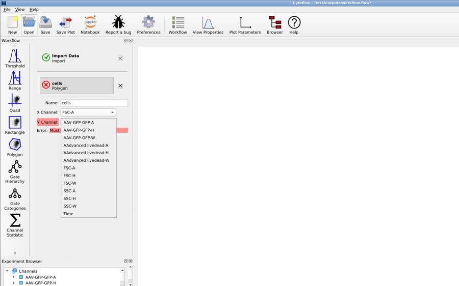
text(await tools.exec_command({cmd:"cu click 218 600 && cu click 650 70 && sleep 3 && cu screenshot /tmp/screen.png","max_output_tokens":1000}));image((await tools.view_image({path:"/tmp/screen.png"})).image_url);
Script completed Wall time 3.4 seconds Output:
{"chunk_id":"7d7f5a","wall_time_seconds":3.1960050190000002,"exit_code":0,"original_token_count":4,"output":"/tmp/screen.png\n"}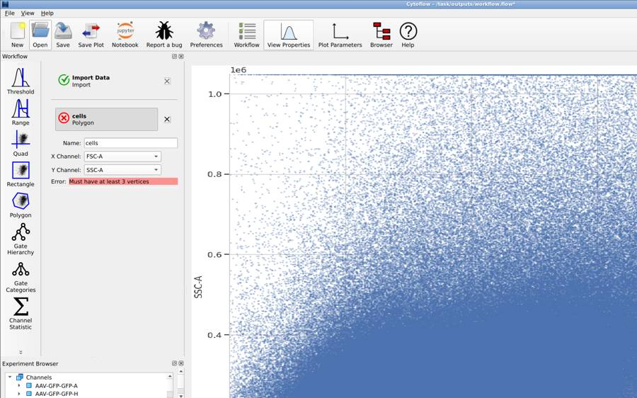
text(await tools.exec_command({cmd:"cu click 650 70 && sleep 1 && cu screenshot /tmp/screen.png","max_output_tokens":1000}));image((await tools.view_image({path:"/tmp/screen.png"})).image_url);
Script completed Wall time 1.3 seconds Output:
{"chunk_id":"33fc82","wall_time_seconds":1.086625421,"exit_code":0,"original_token_count":4,"output":"/tmp/screen.png\n"}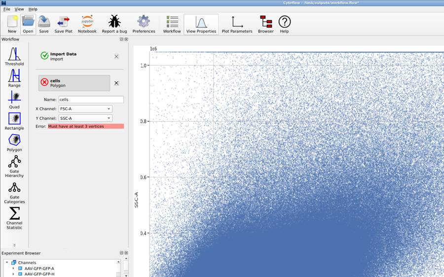
text(await tools.exec_command({cmd:"cu click 706 9 double && sleep 1 && cu screenshot /tmp/screen.png","max_output_tokens":1000}));image((await tools.view_image({path:"/tmp/screen.png"})).image_url);
Script completed Wall time 1.3 seconds Output:
{"chunk_id":"9f55c6","wall_time_seconds":1.147964395,"exit_code":0,"original_token_count":4,"output":"/tmp/screen.png\n"}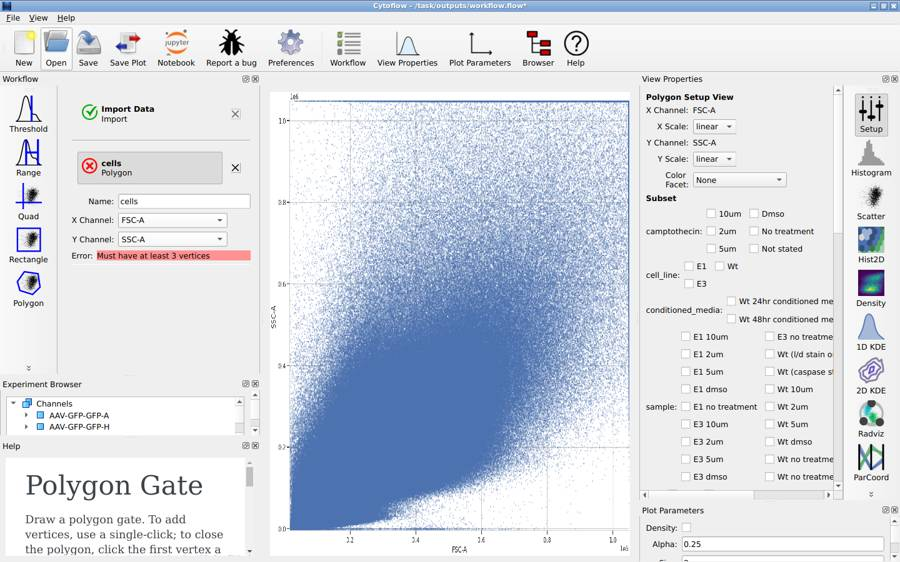
text(await tools.exec_command({cmd:"cu click 1166 202 && sleep 0.2 && cu screenshot /tmp/screen.png","max_output_tokens":1000}));image((await tools.view_image({path:"/tmp/screen.png"})).image_url);
Script completed Wall time 0.4 seconds Output:
{"chunk_id":"640408","wall_time_seconds":0.239061612,"exit_code":0,"original_token_count":4,"output":"/tmp/screen.png\n"}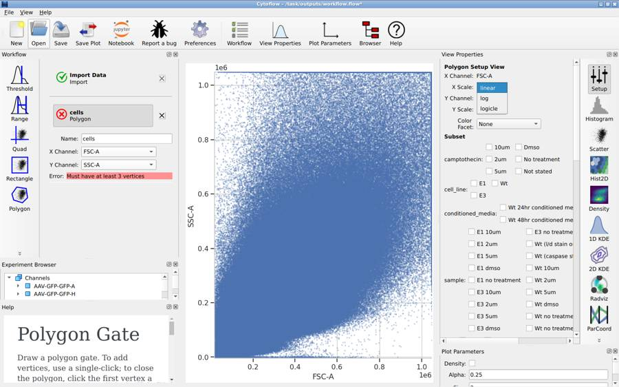
text(await tools.exec_command({cmd:"cu click 1133 229 && cu click 1168 254 && cu key l && cu key Return && cu click 1099 845 && sleep 4 && cu screenshot /tmp/screen.png","max_output_tokens":1000}));image((await tools.view_image({path:"/tmp/screen.png"})).image_url);
Script completed Wall time 4.5 seconds Output:
{"chunk_id":"eede27","wall_time_seconds":4.27570613,"exit_code":0,"original_token_count":4,"output":"/tmp/screen.png\n"}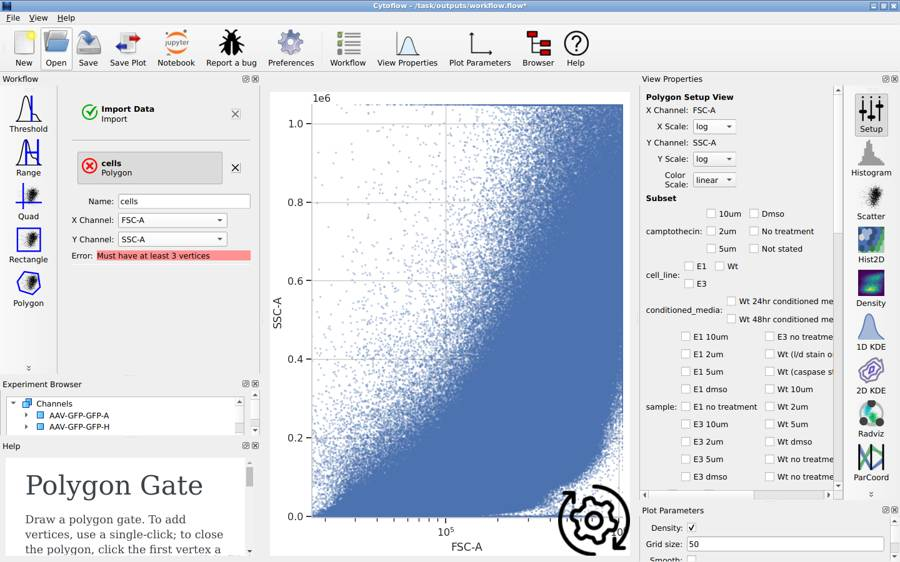
text(await tools.exec_command({cmd:"sleep 6 && cu screenshot /tmp/screen.png","max_output_tokens":1000}));image((await tools.view_image({path:"/tmp/screen.png"})).image_url);
Script completed Wall time 6.1 seconds Output:
{"chunk_id":"a683ea","wall_time_seconds":5.913430079,"exit_code":0,"original_token_count":4,"output":"/tmp/screen.png\n"}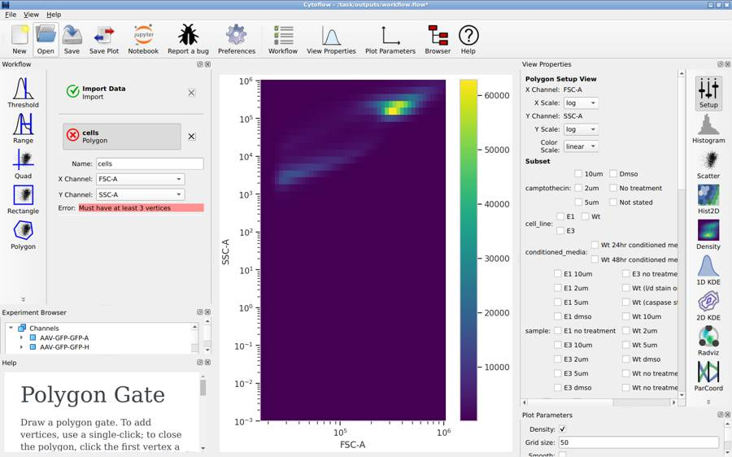
text(await tools.exec_command({cmd:"cu drag 1191 802 1191 540 && cu scroll 1293 857 down 5 && sleep 0.5 && cu screenshot /tmp/screen.png","max_output_tokens":1000}));image((await tools.view_image({path:"/tmp/screen.png"})).image_url);
Script completed Wall time 1.1 seconds Output:
{"chunk_id":"06d089","wall_time_seconds":0.95342183,"exit_code":0,"original_token_count":4,"output":"/tmp/screen.png\n"}text(await tools.exec_command({cmd:"cu scroll 1253 695 down 6 && sleep 0.4 && cu screenshot /tmp/screen.png","max_output_tokens":1000}));image((await tools.view_image({path:"/tmp/screen.png"})).image_url);
Script completed Wall time 1.1 seconds Output:
{"chunk_id":"bb3bd5","wall_time_seconds":0.919896197,"exit_code":0,"original_token_count":4,"output":"/tmp/screen.png\n"}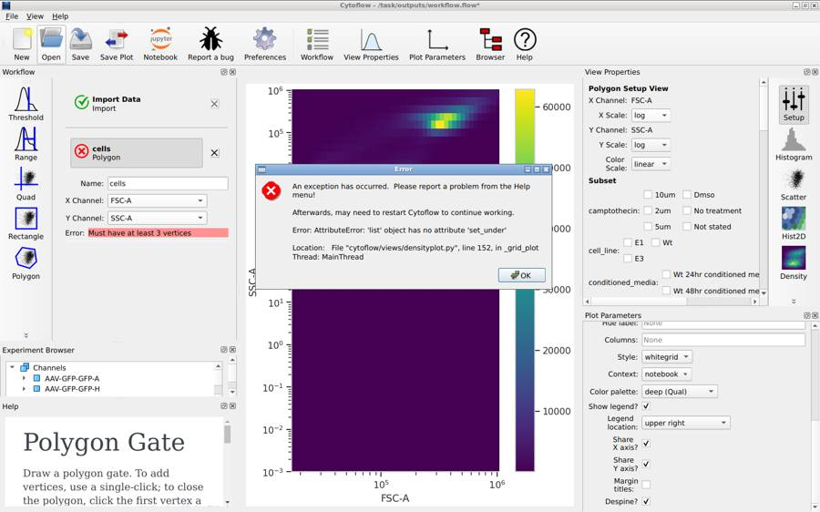
text(await tools.exec_command({cmd:"cu click 915 483 && cu click 1247 689 && cu key Home && cu key Return && cu scroll 1428 819 down 7 && sleep 2 && cu screenshot /tmp/screen.png","max_output_tokens":1000}));image((await tools.view_image({path:"/tmp/screen.png"})).image_url);
Script completed Wall time 3.0 seconds Output:
{"chunk_id":"a77f96","wall_time_seconds":2.860564308,"exit_code":0,"original_token_count":4,"output":"/tmp/screen.png\n"}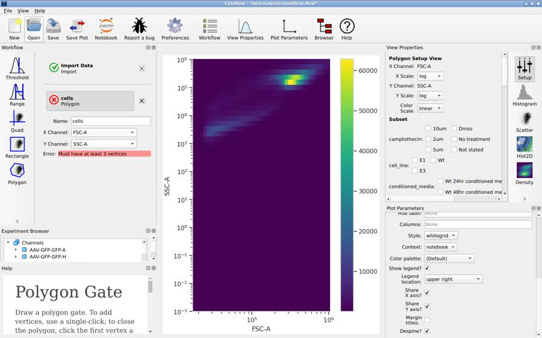
text(await tools.exec_command({cmd:"cu drag 1430 655 1430 870 && sleep 0.5 && cu screenshot /tmp/screen.png","max_output_tokens":1000}));image((await tools.view_image({path:"/tmp/screen.png"})).image_url);
Script completed Wall time 0.6 seconds Output:
{"chunk_id":"655cc8","wall_time_seconds":0.445549069,"exit_code":0,"original_token_count":4,"output":"/tmp/screen.png\n"}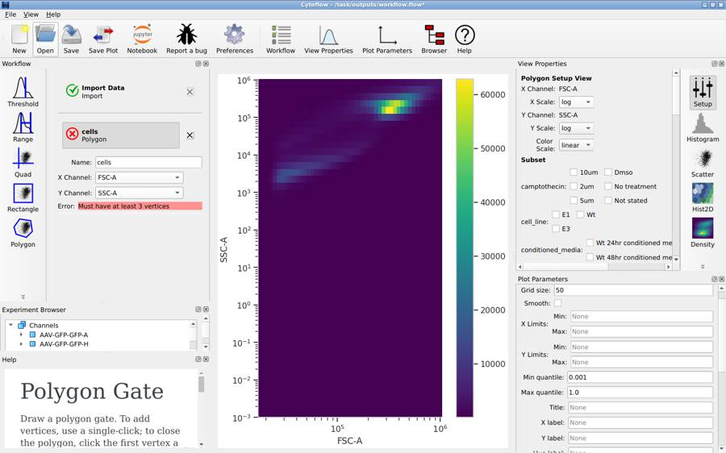
text(await tools.exec_command({cmd:"cu click 1234 628 && cu key ctrl+a && cu type 10000 && cu key Tab && cu click 1230 659 && cu key ctrl+a && cu type 1100000 && cu key Tab && cu click 1233 688 && cu key ctrl+a && cu type 1000 && cu key Tab && cu click 1241 719 && cu key ctrl+a && cu type 1100000 && cu key Tab && sleep 4 && cu screenshot /tmp/screen.png","max_output_tokens":1000}));image((await tools.view_image({path:"/tmp/screen.png"})).image_url);
Script completed Wall time 5.3 seconds Output:
{"chunk_id":"59ad12","wall_time_seconds":5.110566679,"exit_code":0,"original_token_count":4,"output":"/tmp/screen.png\n"}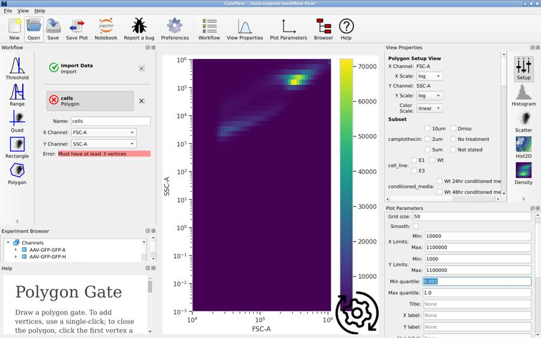
text(await tools.exec_command({cmd:"sleep 5 && cu screenshot /tmp/screen.png","max_output_tokens":1000}));image((await tools.view_image({path:"/tmp/screen.png"})).image_url);
Script completed Wall time 5.1 seconds Output:
{"chunk_id":"6f9476","wall_time_seconds":4.9112056939999995,"exit_code":0,"original_token_count":4,"output":"/tmp/screen.png\n"}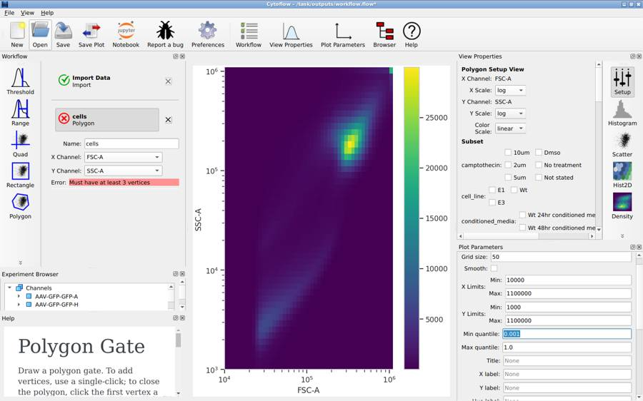
text(await tools.exec_command({cmd:"cu click 651 496 && cu click 719 522 && cu click 877 378 && cu click 877 153 && cu click 743 153 && cu click 651 342 && cu click 651 496 && sleep 4 && cu key ctrl+s && cu screenshot /tmp/screen.png","max_output_tokens":1000}));image((await tools.view_image({path:"/tmp/screen.png"})).image_url);
Script completed Wall time 4.9 seconds Output:
{"chunk_id":"0f9131","wall_time_seconds":4.682565519,"exit_code":0,"original_token_count":4,"output":"/tmp/screen.png\n"}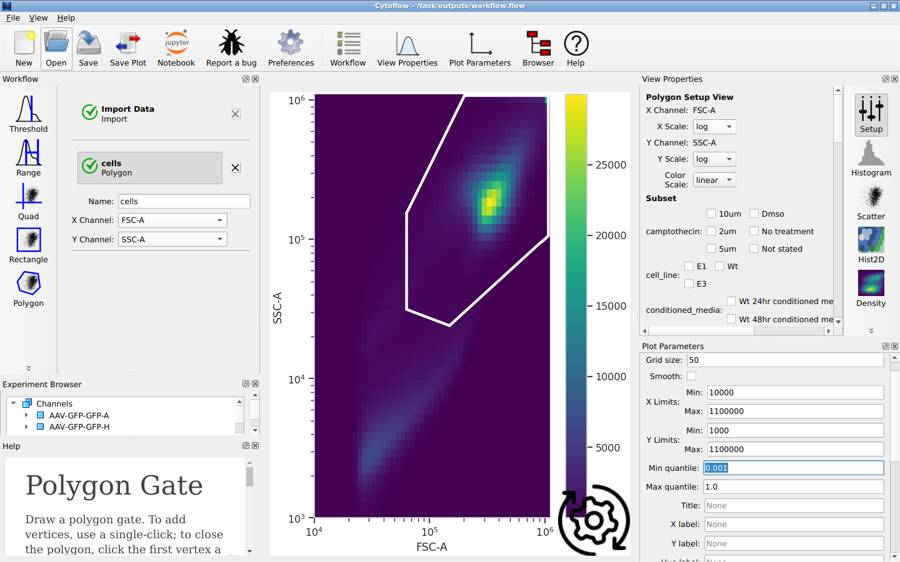
text(await tools.exec_command({cmd:"cu click 45 528 && sleep 1 && cu screenshot /tmp/screen.png","max_output_tokens":1000}));image((await tools.view_image({path:"/tmp/screen.png"})).image_url);
Script completed Wall time 1.2 seconds Output:
{"chunk_id":"f34ce0","wall_time_seconds":1.017776709,"exit_code":0,"original_token_count":4,"output":"/tmp/screen.png\n"}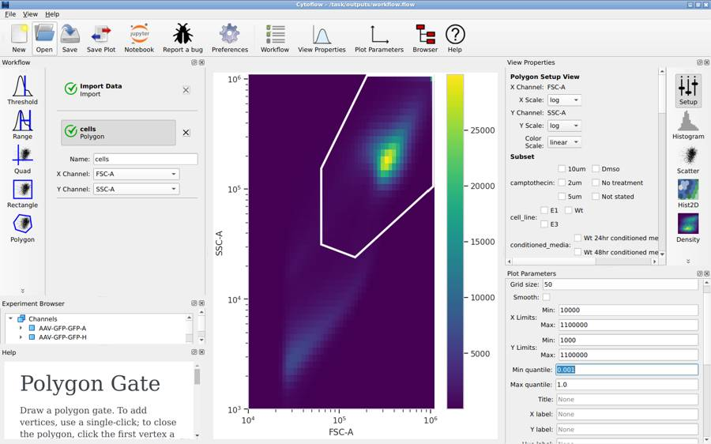
text(await tools.exec_command({cmd:"cu click 408 713 && cu click 408 615 && cu click 45 528 && sleep 1 && cu screenshot /tmp/screen.png","max_output_tokens":1000}));image((await tools.view_image({path:"/tmp/screen.png"})).image_url);
Script completed Wall time 1.4 seconds Output:
{"chunk_id":"16efb7","wall_time_seconds":1.22363347,"exit_code":0,"original_token_count":4,"output":"/tmp/screen.png\n"}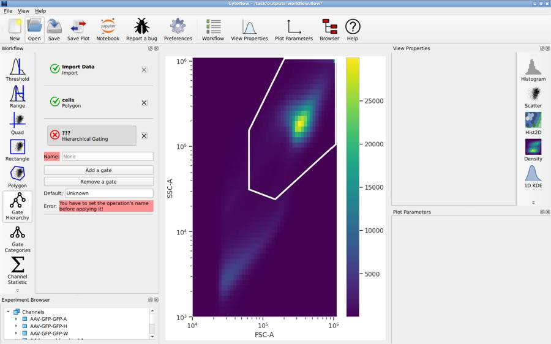
text(await tools.exec_command({cmd:"cu click 269 409 && cu type populations && cu click 263 445 && sleep 0.6 && cu screenshot /tmp/screen.png","max_output_tokens":1000}));image((await tools.view_image({path:"/tmp/screen.png"})).image_url);
Script completed Wall time 1.2 seconds Output:
{"chunk_id":"45ce26","wall_time_seconds":1.00222805,"exit_code":0,"original_token_count":4,"output":"/tmp/screen.png\n"}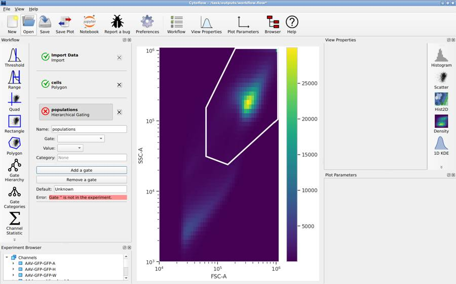
text(await tools.exec_command({cmd:"cu click 376 352 && sleep 0.5 && cu screenshot /tmp/screen.png","max_output_tokens":1000}));image((await tools.view_image({path:"/tmp/screen.png"})).image_url);
Script completed Wall time 0.7 seconds Output:
{"chunk_id":"607079","wall_time_seconds":0.509231319,"exit_code":0,"original_token_count":4,"output":"/tmp/screen.png\n"}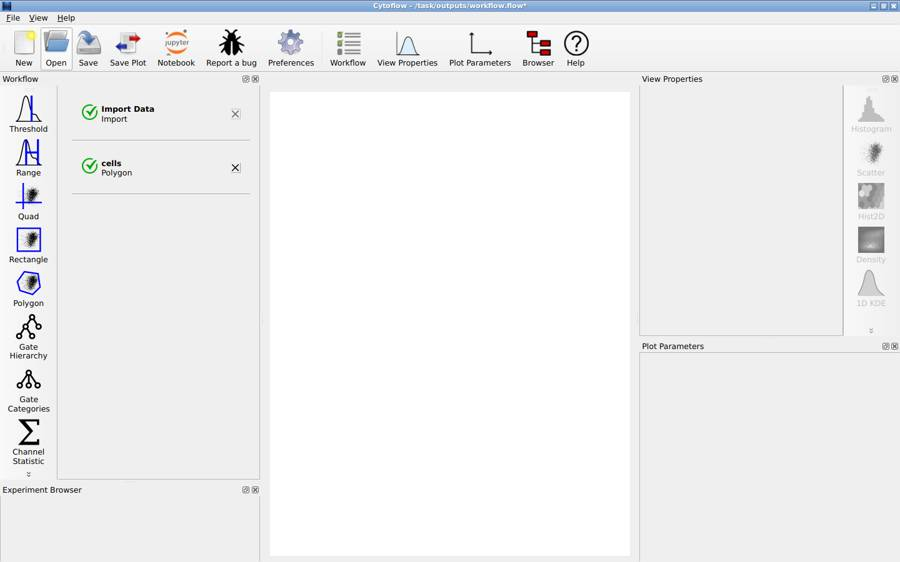
text(await tools.exec_command({cmd:"cu click 239 267 && cu click 48 457 && sleep 0.4 && cu screenshot /tmp/screen.png","max_output_tokens":1000}));image((await tools.view_image({path:"/tmp/screen.png"})).image_url);
Script completed Wall time 0.7 seconds Output:
{"chunk_id":"9e80d7","wall_time_seconds":0.521166196,"exit_code":0,"original_token_count":4,"output":"/tmp/screen.png\n"}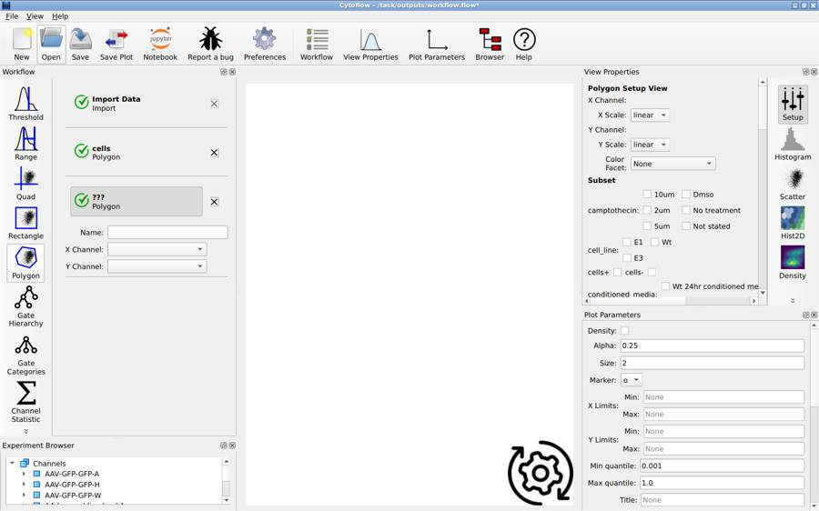
text(await tools.exec_command({cmd:"cu click 273 409 && cu type singlets && cu click 350 439 && cu key f && cu key Return && cu click 350 470 && cu key f && cu key Down && cu key Return && cu click 1087 480 && sleep 3 && cu screenshot /tmp/screen.png","max_output_tokens":1000}));image((await tools.view_image({path:"/tmp/screen.png"})).image_url);
Script completed Wall time 3.8 seconds Output:
{"chunk_id":"6741ed","wall_time_seconds":3.621611546,"exit_code":0,"original_token_count":4,"output":"/tmp/screen.png\n"}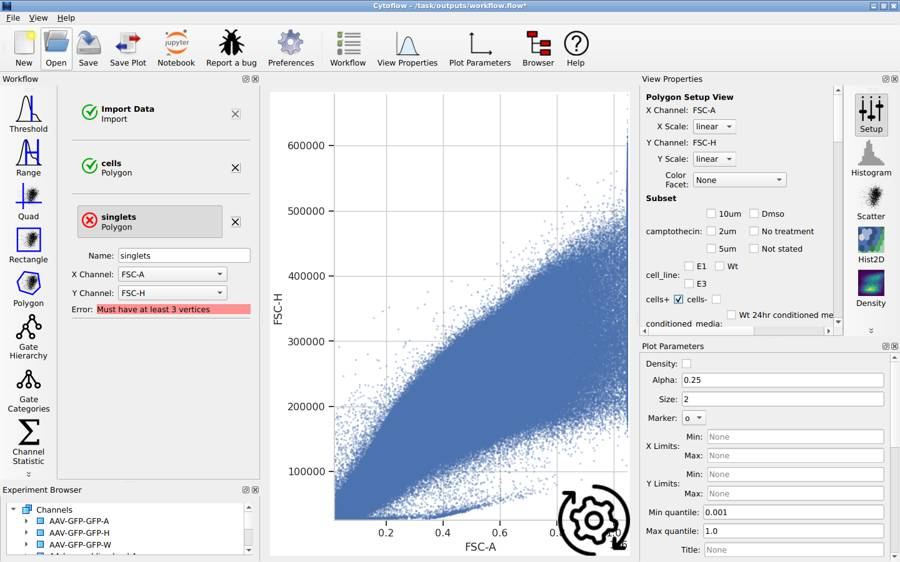
text(await tools.exec_command({cmd:"cu click 1098 582 && sleep 6 && cu screenshot /tmp/screen.png","max_output_tokens":1000}));image((await tools.view_image({path:"/tmp/screen.png"})).image_url);
Script completed Wall time 6.2 seconds Output:
{"chunk_id":"fde0c1","wall_time_seconds":6.018355881,"exit_code":0,"original_token_count":4,"output":"/tmp/screen.png\n"}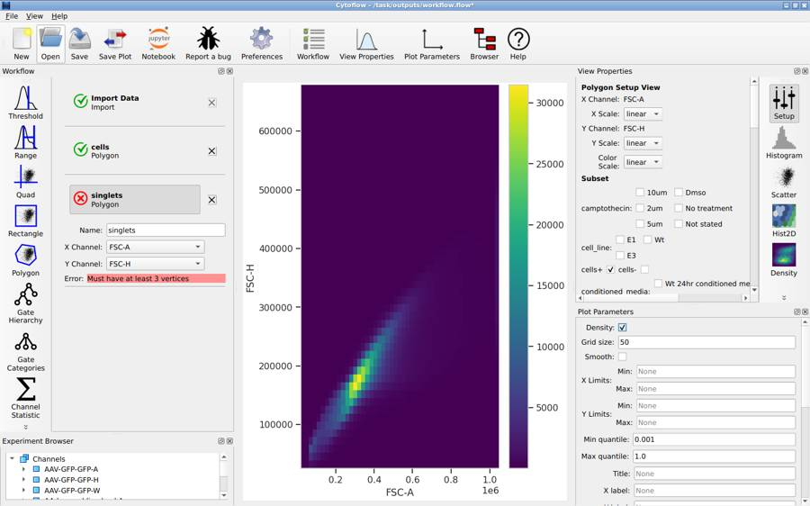
text(await tools.exec_command({cmd:"cu click 548 817 && cu click 866 514 && cu click 866 311 && cu click 583 708 && cu click 548 788 && cu click 548 817 && sleep 3 && cu click 46 244 && sleep 0.5 && cu screenshot /tmp/screen.png","max_output_tokens":1000}));image((await tools.view_image({path:"/tmp/screen.png"})).image_url);
Script completed Wall time 4.3 seconds Output:
{"chunk_id":"7ce569","wall_time_seconds":4.15410586,"exit_code":0,"original_token_count":4,"output":"/tmp/screen.png\n"}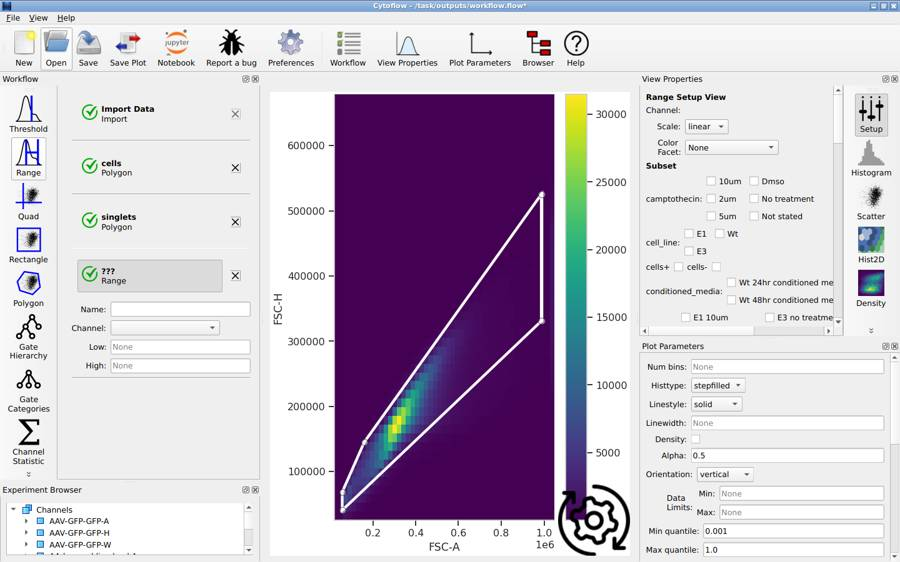
text(await tools.exec_command({cmd:"cu click 271 494 && cu type live && cu click 339 526 && cu key Home && cu key Down && cu key Down && cu key Down && cu key Return && cu click 1151 202 && cu key End && cu key Return && cu click 1085 426 && cu drag 1217 540 1217 730 && sleep 2 && cu screenshot /tmp/screen.png","max_output_tokens":1000}));image((await tools.view_image({path:"/tmp/screen.png"})).image_url);
Script completed Wall time 2.8 seconds Output:
{"chunk_id":"a8b1db","wall_time_seconds":2.582702349,"exit_code":0,"original_token_count":4,"output":"/tmp/screen.png\n"}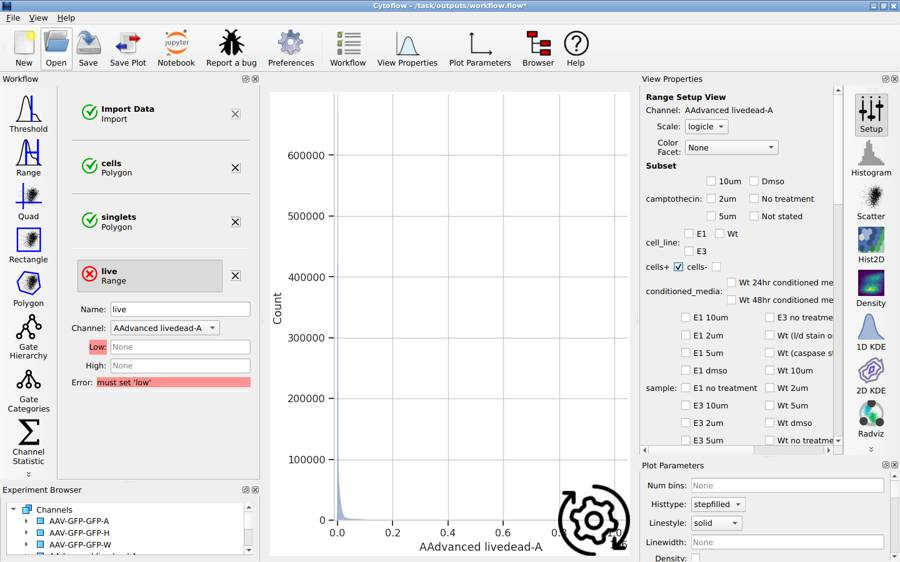
text(await tools.exec_command({cmd:"cu scroll 1050 671 down 5 && sleep 3 && cu screenshot /tmp/screen.png","max_output_tokens":1000}));image((await tools.view_image({path:"/tmp/screen.png"})).image_url);
Script completed Wall time 3.6 seconds Output:
{"chunk_id":"061e20","wall_time_seconds":3.418608977,"exit_code":0,"original_token_count":4,"output":"/tmp/screen.png\n"}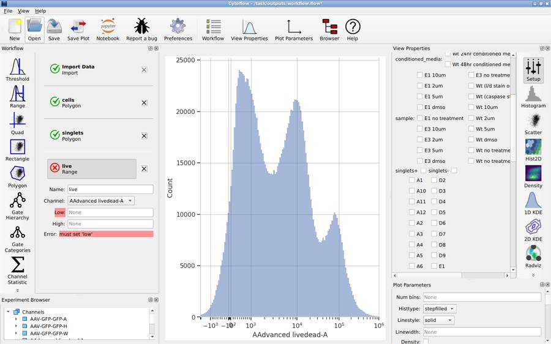
text(await tools.exec_command({cmd:"cu click 1106 445 && cu scroll 1045 670 down 17 && sleep 3 && cu screenshot /tmp/screen.png","max_output_tokens":1000}));image((await tools.view_image({path:"/tmp/screen.png"})).image_url);
Script completed Wall time 4.9 seconds Output:
{"chunk_id":"23d6a0","wall_time_seconds":4.7239683,"exit_code":0,"original_token_count":4,"output":"/tmp/screen.png\n"}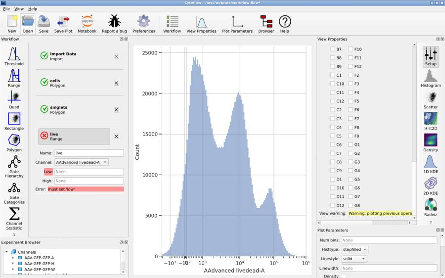
text(await tools.exec_command({cmd:"cu click 1134 467 && cu click 1134 636 && cu click 1134 663 && cu scroll 1047 332 up 28 && sleep 1 && cu click 1234 234 && cu key End && cu key Return && sleep 4 && cu screenshot /tmp/screen.png","max_output_tokens":1000}));image((await tools.view_image({path:"/tmp/screen.png"})).image_url);
Script completed Wall time 8.3 seconds Output:
{"chunk_id":"3dbfdb","wall_time_seconds":8.17506354,"exit_code":0,"original_token_count":4,"output":"/tmp/screen.png\n"}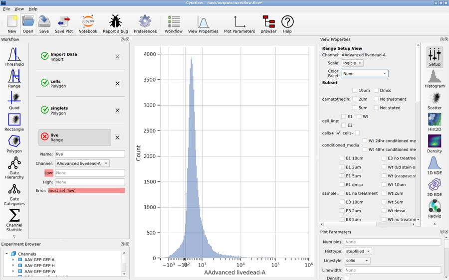
text(await tools.exec_command({cmd:"cu click 1233 235 && sleep 0.2 && cu screenshot /tmp/screen.png","max_output_tokens":1000}));image((await tools.view_image({path:"/tmp/screen.png"})).image_url);
Script completed Wall time 0.4 seconds Output:
{"chunk_id":"904d2f","wall_time_seconds":0.217692339,"exit_code":0,"original_token_count":4,"output":"/tmp/screen.png\n"}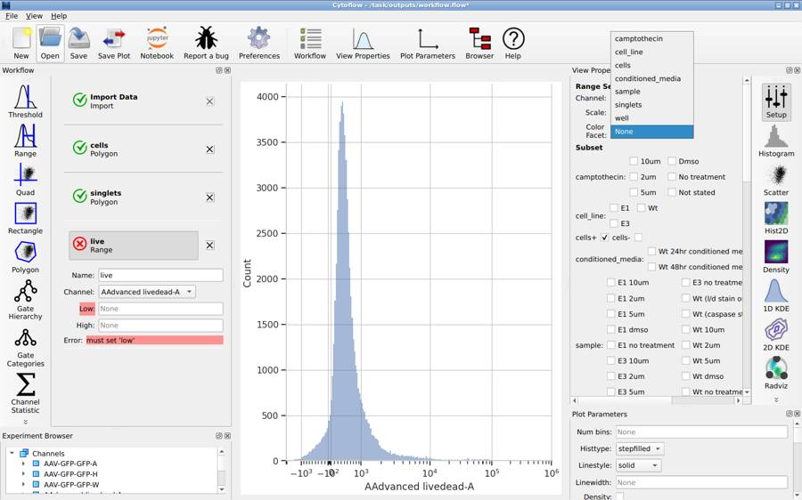
text(await tools.exec_command({cmd:"cu click 1118 210 && sleep 4 && cu screenshot /tmp/screen.png","max_output_tokens":1000}));image((await tools.view_image({path:"/tmp/screen.png"})).image_url);
Script completed Wall time 4.2 seconds Output:
{"chunk_id":"ebec43","wall_time_seconds":4.018808577,"exit_code":0,"original_token_count":4,"output":"/tmp/screen.png\n"}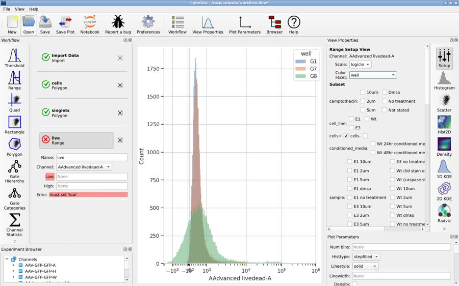
text(await tools.exec_command({cmd:"cu click 281 555 && cu type -1000000 && cu key Tab && cu click 263 585 && cu type 3000 && cu key Tab && cu key ctrl+s && sleep 2 && cu screenshot /task/outputs/gate_live_controls.png && cu click 45 176 && sleep 0.5 && cu screenshot /tmp/screen.png","max_output_tokens":1000}));image((await tools.view_image({path:"/tmp/screen.png"})).image_url);
Script completed Wall time 3.3 seconds Output:
{"chunk_id":"277d5b","wall_time_seconds":3.163227058,"exit_code":0,"original_token_count":14,"output":"/task/outputs/gate_live_controls.png\n/tmp/screen.png\n"}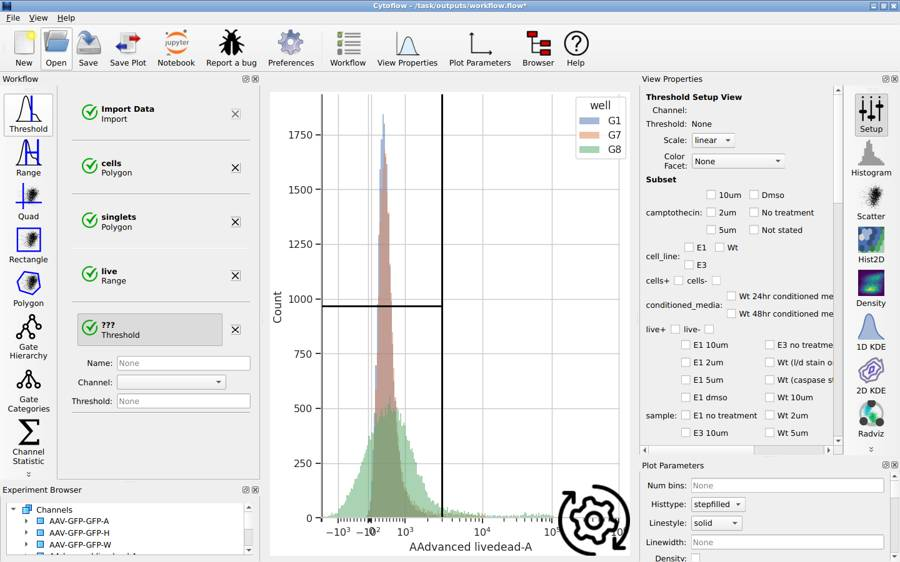
text(await tools.exec_command({cmd:"cu click 280 581 && cu key ctrl+a && cu type caspase_positive && cu click 347 612 && cu key Home && cu key Return && cu click 1168 225 && cu key End && cu key Return && cu click 1085 449 && cu click 1079 527 && cu scroll 1040 660 down 6 && sleep 2 && cu screenshot /tmp/screen.png","max_output_tokens":1000}));image((await tools.view_image({path:"/tmp/screen.png"})).image_url);
Script completed Wall time 3.7 seconds Output:
{"chunk_id":"62c738","wall_time_seconds":3.549735392,"exit_code":0,"original_token_count":4,"output":"/tmp/screen.png\n"}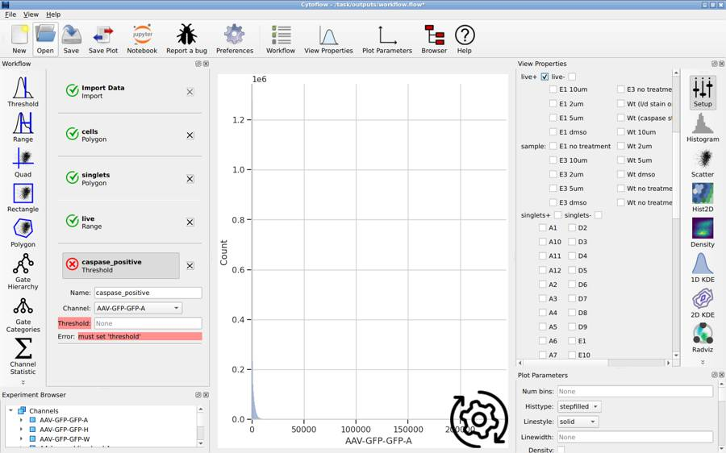
text(await tools.exec_command({cmd:"cu click 1106 427 && cu scroll 1042 661 down 17 && sleep 1 && cu screenshot /tmp/screen.png","max_output_tokens":1000}));image((await tools.view_image({path:"/tmp/screen.png"})).image_url);
Script completed Wall time 2.9 seconds Output:
{"chunk_id":"d26b66","wall_time_seconds":2.723640315,"exit_code":0,"original_token_count":4,"output":"/tmp/screen.png\n"}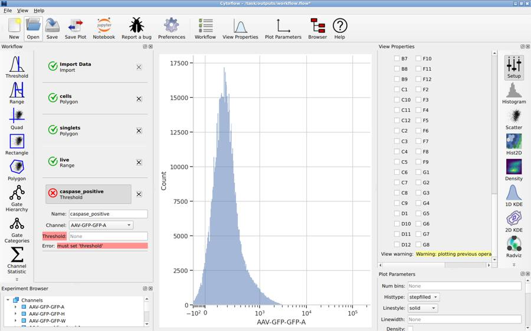
text(await tools.exec_command({cmd:"cu click 1135 467 && cu click 1135 636 && cu click 1135 665 && cu scroll 1043 334 up 30 && sleep 1 && cu click 1244 258 && cu key End && cu key Up && cu key Return && sleep 4 && cu screenshot /tmp/screen.png","max_output_tokens":1000}));image((await tools.view_image({path:"/tmp/screen.png"})).image_url);
Script completed Wall time 8.6 seconds Output:
{"chunk_id":"68b0f6","wall_time_seconds":8.390624202,"exit_code":0,"original_token_count":4,"output":"/tmp/screen.png\n"}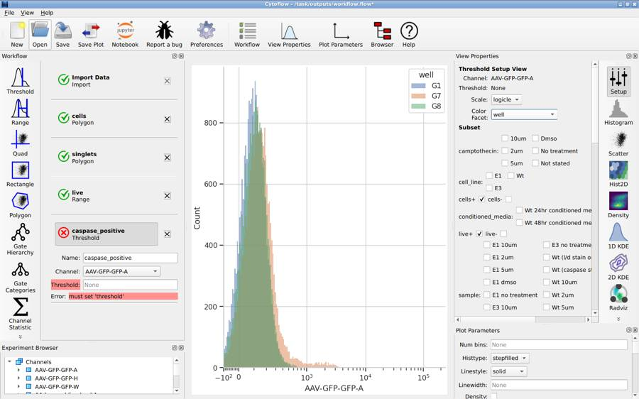
text(await tools.exec_command({cmd:"cu click 283 643 && cu key ctrl+a && cu type 500 && cu key Tab && sleep 3 && cu key ctrl+s && cu screenshot /task/outputs/gate_caspase_controls.png && cu click 47 691 && sleep 1 && cu screenshot /tmp/screen.png","max_output_tokens":1000}));image((await tools.view_image({path:"/tmp/screen.png"})).image_url);
Script completed Wall time 4.5 seconds Output:
{"chunk_id":"113b39","wall_time_seconds":4.332524322,"exit_code":0,"original_token_count":14,"output":"/task/outputs/gate_caspase_controls.png\n/tmp/screen.png\n"}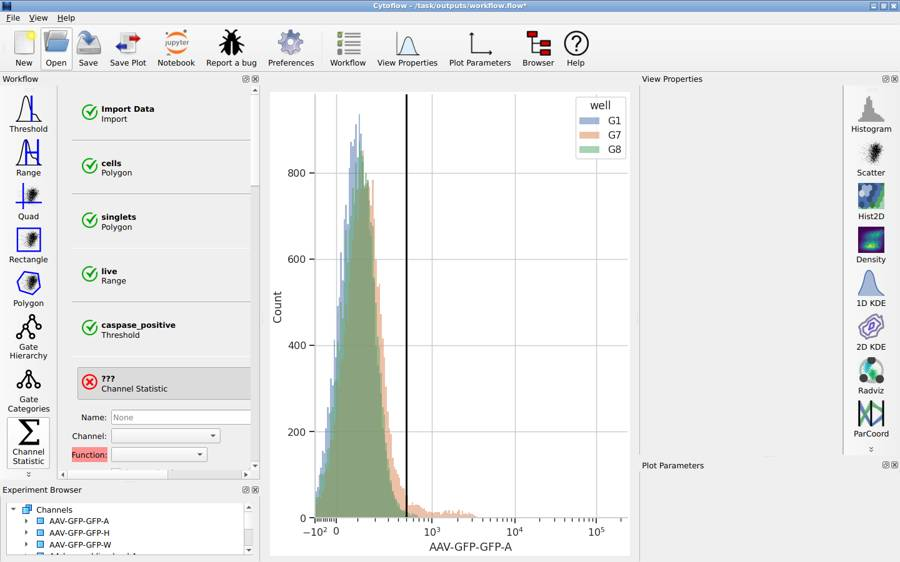
text(await tools.exec_command({cmd:"cu click 408 784 && cu scroll 119 695 down 8 && sleep 0.5 && cu screenshot /tmp/screen.png","max_output_tokens":1000}));image((await tools.view_image({path:"/tmp/screen.png"})).image_url);
Script completed Wall time 1.5 seconds Output:
{"chunk_id":"4b096a","wall_time_seconds":1.322131778,"exit_code":0,"original_token_count":4,"output":"/tmp/screen.png\n"}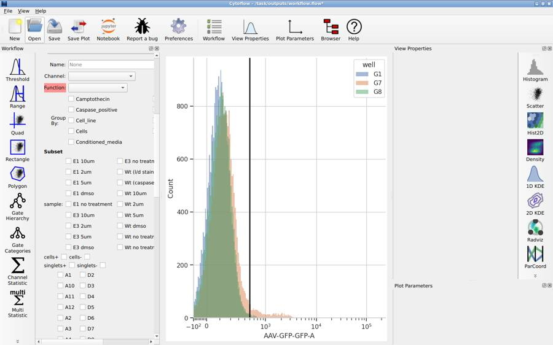
text(await tools.exec_command({cmd:"cu drag 421 457 559 457 && cu click 278 168 && cu type gate_counts && cu click 341 199 && cu key f && cu key Return && cu click 319 230 && sleep 0.3 && cu screenshot /tmp/screen.png","max_output_tokens":1000}));image((await tools.view_image({path:"/tmp/screen.png"})).image_url);
Script completed Wall time 1.0 seconds Output:
{"chunk_id":"cf7c47","wall_time_seconds":0.873819153,"exit_code":0,"original_token_count":4,"output":"/tmp/screen.png\n"}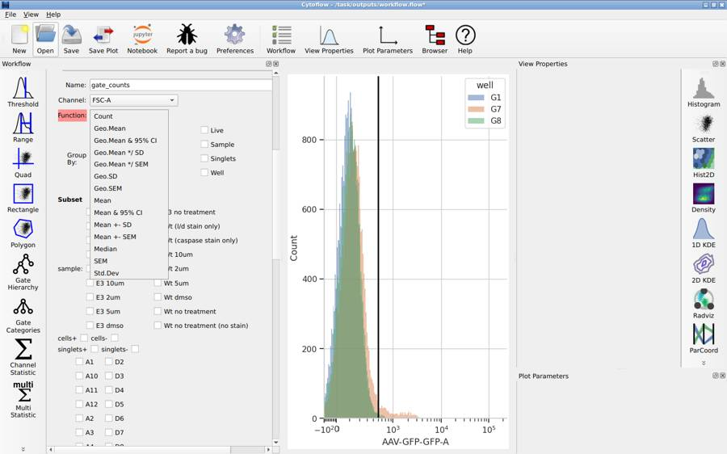
text(await tools.exec_command({cmd:"cu click 209 230 && cu click 185 286 && cu click 185 341 && cu click 405 257 && cu click 405 314 && cu click 405 342 && cu scroll 1394 665 down 6 && sleep 3 && cu screenshot /tmp/screen.png","max_output_tokens":1000}));image((await tools.view_image({path:"/tmp/screen.png"})).image_url);
Script completed Wall time 4.3 seconds Output:
{"chunk_id":"2eb14d","wall_time_seconds":4.145031834,"exit_code":0,"original_token_count":4,"output":"/tmp/screen.png\n"}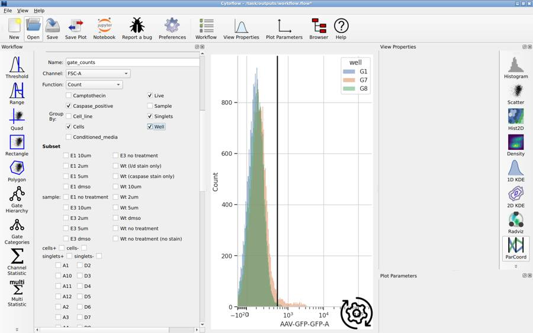
text(await tools.exec_command({cmd:"cu click 1393 720 && cu click 1393 720 && cu click 1393 720 && cu click 1393 720 && cu click 1393 720 && sleep 2 && cu screenshot /tmp/screen.png","max_output_tokens":1000}));image((await tools.view_image({path:"/tmp/screen.png"})).image_url);
Script completed Wall time 2.6 seconds Output:
{"chunk_id":"7b1aef","wall_time_seconds":2.439986687,"exit_code":0,"original_token_count":4,"output":"/tmp/screen.png\n"}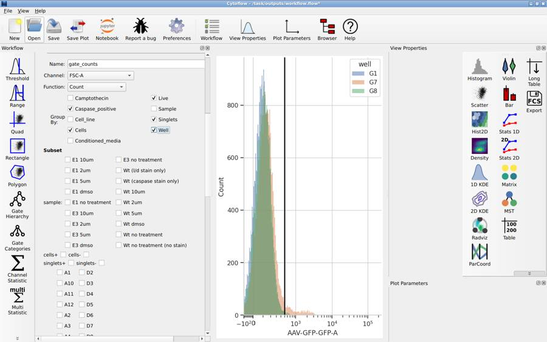
text(await tools.exec_command({cmd:"cu click 1406 175 && sleep 1 && cu screenshot /tmp/screen.png","max_output_tokens":1000}));image((await tools.view_image({path:"/tmp/screen.png"})).image_url);
Script completed Wall time 1.2 seconds Output:
{"chunk_id":"e68505","wall_time_seconds":1.015842267,"exit_code":0,"original_token_count":4,"output":"/tmp/screen.png\n"}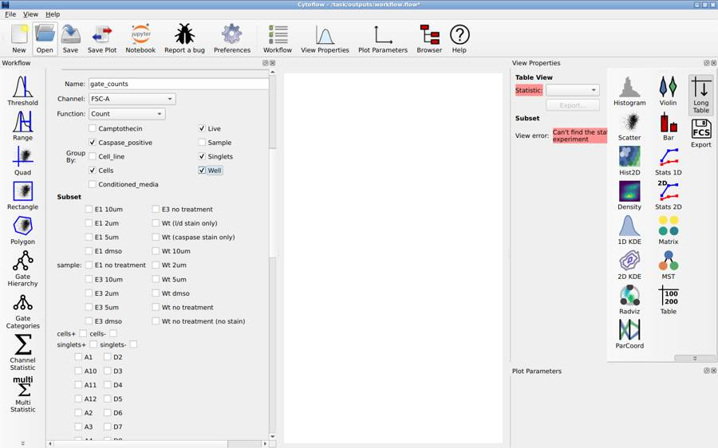
text(await tools.exec_command({cmd:"cu click 1190 181 && sleep 0.2 && cu screenshot /tmp/screen.png","max_output_tokens":1000}));image((await tools.view_image({path:"/tmp/screen.png"})).image_url);
Script completed Wall time 0.4 seconds Output:
{"chunk_id":"5e2196","wall_time_seconds":0.210541851,"exit_code":0,"original_token_count":4,"output":"/tmp/screen.png\n"}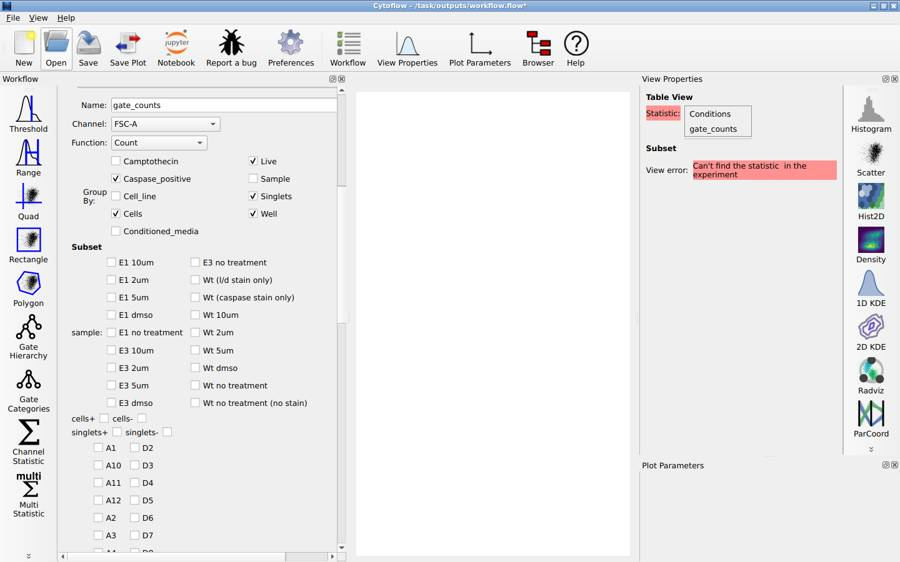
text(await tools.exec_command({cmd:"cu click 1148 206 && sleep 1 && cu click 1151 211 && sleep 0.4 && cu screenshot /tmp/screen.png","max_output_tokens":1000}));image((await tools.view_image({path:"/tmp/screen.png"})).image_url);
Script completed Wall time 1.7 seconds Output:
{"chunk_id":"f117d8","wall_time_seconds":1.528111123,"exit_code":0,"original_token_count":4,"output":"/tmp/screen.png\n"}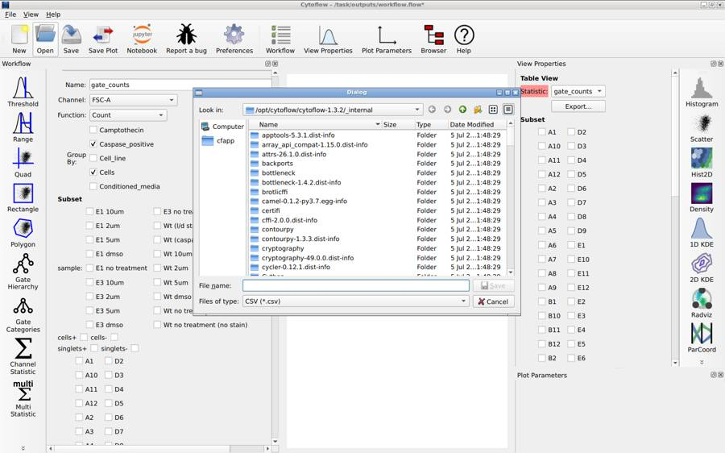
text(await tools.exec_command({cmd:"cu click 683 569 && cu paste /task/outputs/cytoflow_gate_counts.csv && cu click 977 568 && sleep 1 && cu key ctrl+s && sleep 0.5","max_output_tokens":1000}));
text(await tools.exec_command({cmd:"head -12 /task/outputs/cytoflow_gate_counts.csv && wc -l /task/outputs/cytoflow_gate_counts.csv","max_output_tokens":2000}));
Script completed
Wall time 3.1 seconds
Output:
{"chunk_id":"3c9cd4","wall_time_seconds":2.9262344110000003,"exit_code":0,"original_token_count":0,"output":""}
{"chunk_id":"16a81e","wall_time_seconds":0.000003916,"exit_code":0,"original_token_count":71,"output":"caspase_positive,cells,live,singlets,well,FSC-A\n0,0,0,0,A1,264.0\n0,0,0,0,A10,367.0\n0,0,0,0,A11,298.0\n0,0,0,0,A12,293.0\n0,0,0,0,A2,204.0\n0,0,0,0,A3,304.0\n0,0,0,0,A4,180.0\n0,0,0,0,A5,217.0\n0,0,0,0,A6,226.0\n0,0,0,0,A7,200.0\n0,0,0,0,A8,172.0\n1271 /task/outputs/cytoflow_gate_counts.csv\n"}text(await tools.exec_command({cmd:"python - <<'PY'\nimport pandas as pd\nx=pd.read_csv('/task/outputs/cytoflow_gate_counts.csv')\nl=pd.read_csv('/task/inputs/plate_layout.csv')\nx=x.rename(columns={'FSC-A':'count'})\na=x.groupby('well')['count'].sum()\nc=x[x.cells==1].groupby('well')['count'].sum()\ns=x[(x.cells==1)&(x.singlets==1)].groupby('well')['count'].sum()\nv=x[(x.cells==1)&(x.singlets==1)&(x.live==1)].groupby('well')['count'].sum()\np=x[(x.cells==1)&(x.singlets==1)&(x.live==1)&(x.caspase_positive==1)].groupby('well')['count'].sum()\nt=x[(x.cells==1)&(x.singlets==1)&(x.caspase_positive==1)].groupby('well')['count'].sum()\ny=l.set_index('well').join(pd.DataFrame({'all_events':a,'cells':c,'singlets':s,'live':v,'caspase_positive':p,'total_caspase':t})).fillna(0)\ny['caspase_pct']=100*y.caspase_positive/y.live\ny['live_pct']=100*y.live/y.singlets\ny['total_caspase_pct']=100*y.total_caspase/y.singlets\ny.to_csv('/task/outputs/per_well_metrics.csv')\nprint(y[['all_events','cells','singlets','live','caspase_positive','caspase_pct','live_pct','total_caspase_pct']].round(2).to_string())\nprint('\\nCONDITION MEANS')\nprint(y.iloc[:72].groupby(['cell_line','camptothecin','conditioned_media'])[['caspase_pct','live_pct','total_caspase_pct']].mean().round(2).to_string())\nPY","max_output_tokens":9000}));
Script completed
Wall time 0.0 seconds
Output:
{"chunk_id":"1c5f2a","wall_time_seconds":0.000003435,"exit_code":127,"original_token_count":12,"output":"/bin/bash: line 1: python: command not found\n"}text(await tools.exec_command({cmd:"python3 - <<'PY'\nimport pandas as pd\nx=pd.read_csv('/task/outputs/cytoflow_gate_counts.csv')\nl=pd.read_csv('/task/inputs/plate_layout.csv')\nx=x.rename(columns={'FSC-A':'count'})\na=x.groupby('well')['count'].sum()\nc=x[x.cells==1].groupby('well')['count'].sum()\ns=x[(x.cells==1)&(x.singlets==1)].groupby('well')['count'].sum()\nv=x[(x.cells==1)&(x.singlets==1)&(x.live==1)].groupby('well')['count'].sum()\np=x[(x.cells==1)&(x.singlets==1)&(x.live==1)&(x.caspase_positive==1)].groupby('well')['count'].sum()\nt=x[(x.cells==1)&(x.singlets==1)&(x.caspase_positive==1)].groupby('well')['count'].sum()\ny=l.set_index('well').join(pd.DataFrame({'all_events':a,'cells':c,'singlets':s,'live':v,'caspase_positive':p,'total_caspase':t})).fillna(0)\ny['caspase_pct']=100*y.caspase_positive/y.live\ny['live_pct']=100*y.live/y.singlets\ny['total_caspase_pct']=100*y.total_caspase/y.singlets\ny.to_csv('/task/outputs/per_well_metrics.csv')\nprint(y[['all_events','cells','singlets','live','caspase_positive','caspase_pct','live_pct','total_caspase_pct']].round(2).to_string())\nprint('\\nCONDITION MEANS')\nprint(y.iloc[:72].groupby(['cell_line','camptothecin','conditioned_media'])[['caspase_pct','live_pct','total_caspase_pct']].mean().round(2).to_string())\nPY","max_output_tokens":9000}));
Script completed
Wall time 0.4 seconds
Output:
{"chunk_id":"0b81aa","wall_time_seconds":0.25159027,"exit_code":0,"original_token_count":3022,"output":" all_events cells singlets live caspase_positive caspase_pct live_pct total_caspase_pct\nwell \nA1 31328.0 21499.0 19903.0 13362.0 1359.0 10.17 67.14 32.35\nA2 40169.0 29279.0 27251.0 19006.0 1954.0 10.28 69.74 33.47\nA3 47337.0 32421.0 30379.0 21230.0 2432.0 11.46 69.88 34.14\nA4 33079.0 24424.0 22312.0 13814.0 2044.0 14.80 61.91 43.05\nA5 34963.0 25607.0 23555.0 15572.0 1609.0 10.33 66.11 35.88\nA6 33431.0 25747.0 22091.0 14174.0 903.0 6.37 64.16 32.42\nA7 36445.0 28269.0 24599.0 16060.0 908.0 5.65 65.29 31.68\nA8 22867.0 17690.0 14954.0 9032.0 640.0 7.09 60.40 36.98\nA9 40034.0 25402.0 23004.0 15113.0 1354.0 8.96 65.70 33.33\nA10 42298.0 29614.0 27113.0 18177.0 1219.0 6.71 67.04 32.00\nA11 43376.0 29539.0 27401.0 18146.0 1314.0 7.24 66.22 33.96\nA12 30724.0 20019.0 17724.0 10997.0 850.0 7.73 62.05 35.70\nB1 18757.0 14572.0 13454.0 3473.0 1715.0 49.38 25.81 83.63\nB2 32477.0 23447.0 22032.0 6328.0 2008.0 31.73 28.72 78.40\nB3 40067.0 27536.0 25927.0 5853.0 1833.0 31.32 22.57 82.37\nB4 19965.0 14305.0 12614.0 3348.0 1388.0 41.46 26.54 80.78\nB5 17852.0 14451.0 13464.0 3164.0 1295.0 40.93 23.50 82.14\nB6 31705.0 23245.0 21810.0 5495.0 1631.0 29.68 25.19 79.34\nB7 35417.0 24960.0 23467.0 4938.0 1284.0 26.00 21.04 81.40\nB8 26222.0 17709.0 16033.0 3465.0 1091.0 31.49 21.61 81.27\nB9 34411.0 22789.0 20910.0 8780.0 2052.0 23.37 41.99 64.14\nB10 40098.0 26497.0 24401.0 10100.0 2218.0 21.96 41.39 64.22\nB11 41005.0 25365.0 23623.0 8153.0 2241.0 27.49 34.51 70.89\nB12 31680.0 16841.0 15130.0 4745.0 1057.0 22.28 31.36 69.98\nC1 17681.0 11901.0 9975.0 2426.0 235.0 9.69 24.32 67.89\nC2 25455.0 14544.0 12717.0 3666.0 593.0 16.18 28.83 69.69\nC3 21098.0 13970.0 11904.0 3533.0 258.0 7.30 29.68 61.96\nC4 18113.0 11150.0 9461.0 2661.0 349.0 13.12 28.13 68.07\nC5 18729.0 11221.0 9466.0 3077.0 371.0 12.06 32.51 62.81\nC6 21716.0 12772.0 10998.0 3312.0 392.0 11.84 30.11 65.40\nC7 22874.0 13657.0 12115.0 4485.0 470.0 10.48 37.02 58.46\nC8 18604.0 11324.0 9674.0 3276.0 324.0 9.89 33.86 60.31\nC9 22962.0 15594.0 13625.0 8021.0 659.0 8.22 58.87 37.48\nC10 15794.0 11500.0 10170.0 7257.0 637.0 8.78 71.36 28.97\nC11 19854.0 14967.0 12940.0 9655.0 557.0 5.77 74.61 24.28\nC12 23104.0 15365.0 13578.0 8790.0 571.0 6.50 64.74 32.74\nD1 29965.0 20460.0 19174.0 10644.0 504.0 4.74 55.51 44.14\nD2 42557.0 29983.0 27923.0 17565.0 634.0 3.61 62.91 36.13\nD3 44711.0 30800.0 28907.0 17407.0 829.0 4.76 60.22 39.79\nD4 26104.0 18854.0 16802.0 8465.0 376.0 4.44 50.38 48.30\nD5 28348.0 19906.0 18205.0 10864.0 343.0 3.16 59.68 37.56\nD6 32268.0 23111.0 21136.0 13284.0 413.0 3.11 62.85 34.97\nD7 38003.0 27208.0 25525.0 15671.0 566.0 3.61 61.39 35.58\nD8 27787.0 18305.0 16342.0 8291.0 295.0 3.56 50.73 46.84\nD9 35585.0 22041.0 19447.0 10937.0 442.0 4.04 56.24 40.30\nD10 38425.0 26776.0 24644.0 15804.0 526.0 3.33 64.13 33.87\nD11 43319.0 29467.0 27414.0 17536.0 673.0 3.84 63.97 34.78\nD12 28999.0 24048.0 21970.0 17027.0 278.0 1.63 77.50 20.40\nE1 18885.0 13693.0 12554.0 2801.0 595.0 21.24 22.31 79.96\nE2 35801.0 24790.0 23159.0 4583.0 896.0 19.55 19.79 82.62\nE3 39231.0 26571.0 24864.0 4341.0 676.0 15.57 17.46 83.71\nE4 18739.0 14156.0 12349.0 1852.0 528.0 28.51 15.00 87.35\nE5 18850.0 14199.0 12541.0 2161.0 437.0 20.22 17.23 83.66\nE6 32342.0
… [6,361 more characters not shown]text(await tools.exec_command({cmd:"cu click 1393 247 && sleep 0.5 && cu screenshot /tmp/screen.png","max_output_tokens":1000}));image((await tools.view_image({path:"/tmp/screen.png"})).image_url);
Script completed Wall time 0.7 seconds Output:
{"chunk_id":"71c9eb","wall_time_seconds":0.517728659,"exit_code":0,"original_token_count":4,"output":"/tmp/screen.png\n"}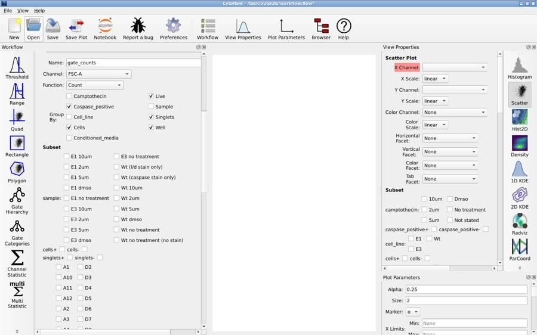
text(await tools.exec_command({cmd:"cu click 1297 180 && cu key End && cu key Return && cu click 1294 240 && cu key f && cu key Return && cu click 1191 270 && cu key l && cu key Down && cu key Return && cu click 1270 370 && cu key End && cu key Up && cu key Return && cu click 1152 641 && cu drag 560 480 420 480 && cu click 557 70 && sleep 3 && cu screenshot /tmp/screen.png","max_output_tokens":1000}));image((await tools.view_image({path:"/tmp/screen.png"})).image_url);
Script completed Wall time 3.9 seconds Output:
{"chunk_id":"c02056","wall_time_seconds":3.770390867,"exit_code":0,"original_token_count":4,"output":"/tmp/screen.png\n"}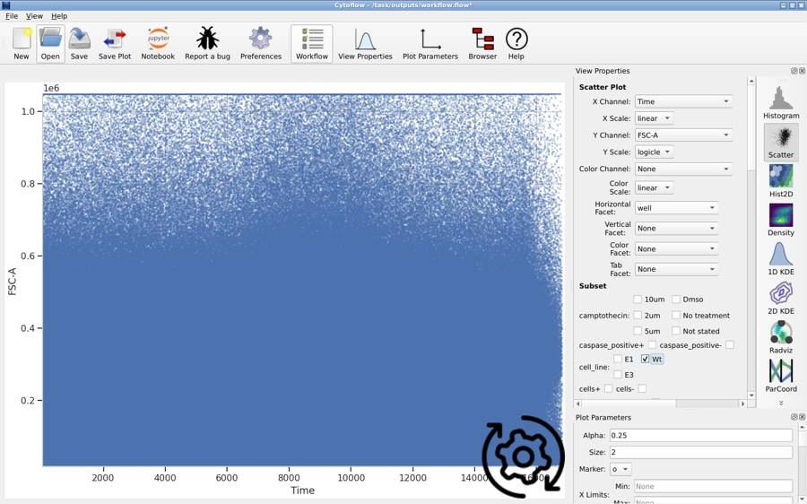
text(await tools.exec_command({cmd:"cu scroll 1039 658 down 5 && sleep 0.5 && cu screenshot /tmp/screen.png","max_output_tokens":1000}));image((await tools.view_image({path:"/tmp/screen.png"})).image_url);
Script completed Wall time 1.1 seconds Output:
{"chunk_id":"7a5861","wall_time_seconds":0.928472034,"exit_code":0,"original_token_count":4,"output":"/tmp/screen.png\n"}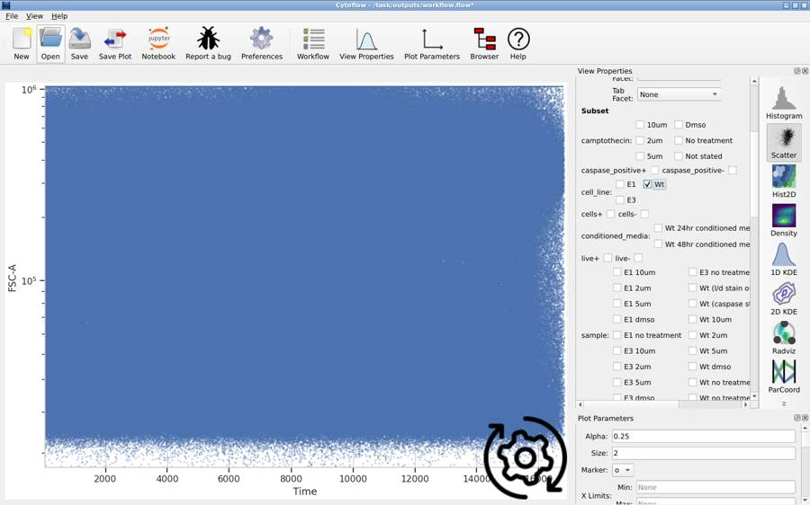
text(await tools.exec_command({cmd:"cu click 1170 405 && cu drag 1180 733 1180 540 && cu scroll 1035 828 down 6 && sleep 4 && cu screenshot /tmp/screen.png","max_output_tokens":1000}));image((await tools.view_image({path:"/tmp/screen.png"})).image_url);
Script completed Wall time 4.9 seconds Output:
{"chunk_id":"4b06fd","wall_time_seconds":4.670879736,"exit_code":0,"original_token_count":4,"output":"/tmp/screen.png\n"}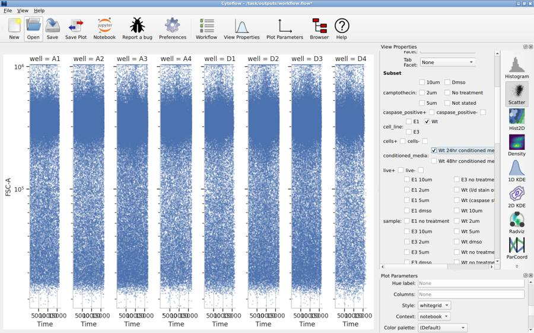
text(await tools.exec_command({cmd:"cu click 1234 797 && cu key ctrl+a && cu type 4 && cu key Tab && sleep 4 && cu screenshot /task/outputs/qc_time_WT_24hr.png","max_output_tokens":1000}));image((await tools.view_image({path:"/task/outputs/qc_time_WT_24hr.png"})).image_url);
Script completed Wall time 4.3 seconds Output:
{"chunk_id":"de5566","wall_time_seconds":4.14269639,"exit_code":0,"original_token_count":9,"output":"/task/outputs/qc_time_WT_24hr.png\n"}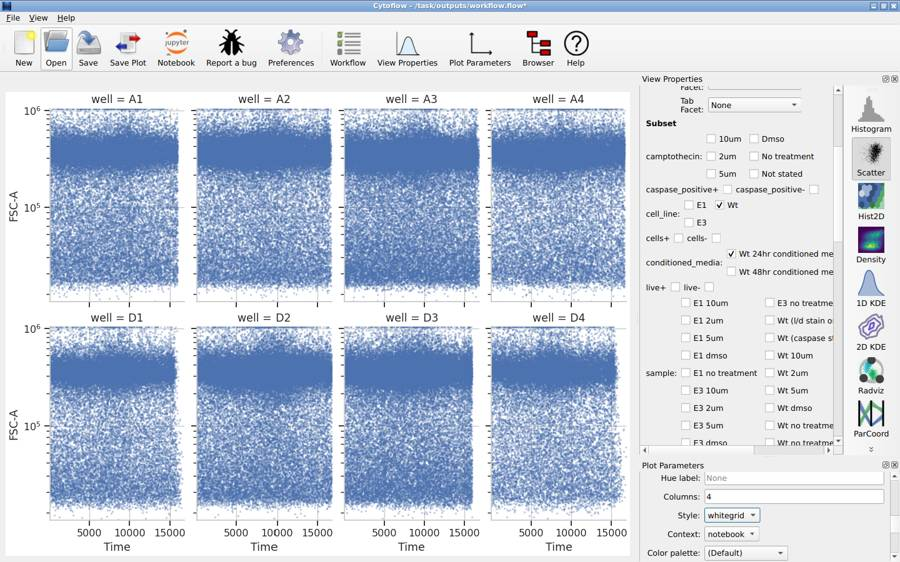
text(await tools.exec_command({cmd:"cu click 1170 434 && cu click 1170 406 && sleep 4 && cu screenshot /task/outputs/qc_time_WT_48hr.png","max_output_tokens":1000}));image((await tools.view_image({path:"/task/outputs/qc_time_WT_48hr.png"})).image_url);
Script completed Wall time 4.4 seconds Output:
{"chunk_id":"169b07","wall_time_seconds":4.172139738,"exit_code":0,"original_token_count":9,"output":"/task/outputs/qc_time_WT_48hr.png\n"}text(await tools.exec_command({cmd:"sleep 5 && cu screenshot /task/outputs/qc_time_WT_48hr.png","max_output_tokens":1000}));image((await tools.view_image({path:"/task/outputs/qc_time_WT_48hr.png"})).image_url);
Script completed Wall time 5.1 seconds Output:
{"chunk_id":"35580c","wall_time_seconds":4.964138966,"exit_code":0,"original_token_count":9,"output":"/task/outputs/qc_time_WT_48hr.png\n"}text(await tools.exec_command({cmd:"cu click 1102 327 && cu click 1151 327 && sleep 8 && cu screenshot /task/outputs/qc_time_E1_48hr.png","max_output_tokens":1000}));image((await tools.view_image({path:"/task/outputs/qc_time_E1_48hr.png"})).image_url);
Script completed Wall time 8.4 seconds Output:
{"chunk_id":"fcbcee","wall_time_seconds":8.177277152,"exit_code":0,"original_token_count":9,"output":"/task/outputs/qc_time_E1_48hr.png\n"}text(await tools.exec_command({cmd:"cu click 1170 406 && cu click 1170 434 && sleep 8 && cu screenshot /task/outputs/qc_time_E1_24hr.png","max_output_tokens":1000}));image((await tools.view_image({path:"/task/outputs/qc_time_E1_24hr.png"})).image_url);
Script completed Wall time 8.4 seconds Output:
{"chunk_id":"8dbe07","wall_time_seconds":8.177471123,"exit_code":0,"original_token_count":9,"output":"/task/outputs/qc_time_E1_24hr.png\n"}text(await tools.exec_command({cmd:"cu click 1102 356 && cu click 1102 328 && sleep 8 && cu screenshot /task/outputs/qc_time_E3_24hr.png","max_output_tokens":1000}));image((await tools.view_image({path:"/task/outputs/qc_time_E3_24hr.png"})).image_url);
Script completed Wall time 8.4 seconds Output:
{"chunk_id":"51cd9c","wall_time_seconds":8.183445968,"exit_code":0,"original_token_count":9,"output":"/task/outputs/qc_time_E3_24hr.png\n"}text(await tools.exec_command({cmd:"cu click 1170 434 && cu click 1170 406 && sleep 8 && cu screenshot /task/outputs/qc_time_E3_48hr.png","max_output_tokens":1000}));image((await tools.view_image({path:"/task/outputs/qc_time_E3_48hr.png"})).image_url);
Script completed Wall time 8.4 seconds Output:
{"chunk_id":"b8bb0c","wall_time_seconds":8.181808371,"exit_code":0,"original_token_count":9,"output":"/task/outputs/qc_time_E3_48hr.png\n"}text(await tools.exec_command({cmd:"cu drag 1120 720 1313 720 && sleep 0.3 && cu screenshot /tmp/screen.png","max_output_tokens":1000}));image((await tools.view_image({path:"/tmp/screen.png"})).image_url);
Script completed Wall time 0.5 seconds Output:
{"chunk_id":"1f9e01","wall_time_seconds":0.302255038,"exit_code":0,"original_token_count":4,"output":"/tmp/screen.png\n"}text(await tools.exec_command({cmd:"cu click 1168 407 && cu drag 1236 720 1040 720 && cu click 1170 434 && sleep 8 && cu screenshot /task/outputs/qc_time_E3_none_controls.png","yield_time_ms":10000,"max_output_tokens":1000}));image((await tools.view_image({path:"/task/outputs/qc_time_E3_none_controls.png"})).image_url);
Script completed Wall time 8.4 seconds Output:
{"chunk_id":"b65dc4","wall_time_seconds":8.192206602,"exit_code":0,"original_token_count":11,"output":"/task/outputs/qc_time_E3_none_controls.png\n"}text(await tools.exec_command({cmd:"cu click 1102 328 && cu click 1102 356 && sleep 8 && cu screenshot /task/outputs/qc_time_E1_none_controls.png","max_output_tokens":1000}));image((await tools.view_image({path:"/task/outputs/qc_time_E1_none_controls.png"})).image_url);
Script completed Wall time 8.3 seconds Output:
{"chunk_id":"c79a8b","wall_time_seconds":8.169219212,"exit_code":0,"original_token_count":11,"output":"/task/outputs/qc_time_E1_none_controls.png\n"}text(await tools.exec_command({cmd:"cu click 1151 328 && cu click 1102 328 && sleep 8 && cu screenshot /task/outputs/qc_time_WT_none_controls.png","max_output_tokens":1000}));image((await tools.view_image({path:"/task/outputs/qc_time_WT_none_controls.png"})).image_url);
Script completed Wall time 8.4 seconds Output:
{"chunk_id":"211715","wall_time_seconds":8.180136933,"exit_code":0,"original_token_count":11,"output":"/task/outputs/qc_time_WT_none_controls.png\n"}text(await tools.web__run({search_query:[{q:'site.thermofisher.com CellEvent Caspase-3/7 Green Flow Cytometry Assay Kit C10427 1 µM SYTOX 2 µM camptothecin'}],response_length:"long"}));
Script completed Wall time 1.3 seconds Output: USER GUIDE CellEvent™ Caspase-3/7 Green Flow Cytom (https://tools.thermofisher.com/content/sfs/manuals/cellevent_caspase_3_7_grn_flow_cytometry_assay_kit_man.pdf) citeturn0search12 [wordlim: 200] Published: 10.4 years ago; CellEvent™ Caspase-3/7 Green Flow Cytometry Assay Kit ... Material None | Amount C10427 | C10740 | Concentration None | Storage* None --- | --- | --- | --- | --- Material CellEvent™ Caspase 3/7 Green Detection Reagent (Component A) | Amount 100 tests | 20 tests | Concentration 500 μM | Storage* • ≤–20˚C • Desiccate • Store vial upright • Protect from light Material SYTOX™ AADvanced™ Dead Cell Stain (Component B) | Amount 100 tests | 20 tests | Concentration 1 mM† | Storage* None Material Dimethylsulfoxide (DMSO, Component C) | Amount 200 μL | 200 μL | Concentration N/A | Storage* None Material * When stored as directed, kit components are stable for at least 1 year. USER GUIDE CellEvent™ Caspase-3/7 Green Flow Cytometry Assay Kit Catalog Number C10427, C10740 Pub. No. MAN0007522 Rev. A.0 Table 1. Contents and storage Material None | Amount C10427 | C10740 | Concentration None | Storage* None --- | --- | --- | --- | --- Material CellEvent™ Caspase 3/7 Green Detection Reagent (Component A) | Amount 100 tests | 20 tests | Concentration 500 μM | Storage* • ≤–20˚C • Desiccate • Store vial upright • Protect from light Material SYTOX™ AADvanced™ Dead Cell Stain (Component B) | Amount 100 tests | 20 tests | Concentration 1 mM† | Storage* None Material Dimethylsulfoxide (DMSO, Component C) | Amount 200 μL | 200 μL | Concentration N/A | Storage* None Material * When stored as directed, kit components are stable for at least 1 year. † When reconstituted with DMSO. Before refreezing, seal the vial tightly. | Amount None | | Concentration None | Storage* None Material Number of reactions: Sufficient material is supplied for 100 reactions (Cat. No. C10427) or 20 reactions (Cat. No. C10740), based on the protocol below. | Amount None | | Concentration None | Storage* None Material Approximate fluorescence excitation and emission maxima (bound to DNA): CellEvent™ Caspase 3/7 Green Detection Reagent ~511/533 nm; SYTOX™ AADvanced™ dead cell stain 546/647 nm (see Figure 1, page 2). | Amount None | | Concentration None | Storage* NoneIntroduction A distinctive feature of the early stages of apoptosis is the activation of caspase enzymes, which are cysteine-aspartic acid-specific proteases. These enzymes participate in a series of reactions that are triggered in response to pro-apoptotic signals and result in the cleavage of protein substrates and in the subsequent disassembly of the cell.1 The recognition sequence in the target substrate always includes an aspartic acid residue; cleavage takes place at the carbonyl end of that residue.2 CellEvent™ Caspase-3/7 Green Detection Reagent is a novel fluorogenic substrate for detection of activated caspases 3 and 7 in apoptotic cells. This cell-permeant reagent consists of a four amino acid peptide (DEVD) conjugated to a nucleic acid binding dye. During apoptosis, caspase-3 and caspase-7 proteins are activated and are able to cleave the caspase 3/7 recognition sequence encoded in the DEVD peptide. Cleavage of the recognition sequence and binding of DNA by the reagent labels apoptotic cells with a bright, fluorogenic signal. When used together with the SYTOX™ AADvanced™ dead cell stain, apoptotic cells can easily be discriminated from live and necrotic cells (Figure 2, page 2). For Research Use Only. Not for use in diagnostic procedures.-------------------------------------------------------------------------------- USER GUIDE CellEvent™ Caspase-3/7 Green Flow Cytom (https://www.thermofisher.com/TFS-Assets/LSG/manuals/cellevent_caspase_3_7_grn_flow_cytometry_assay_kit_man.pdf) citeturn0search13 [wordlim: 200] Published: 8 months ago; C10427 | Cat. ... C10740) based on the protocol “Stain cells with CellEvent™ Caspase-3/7 Green Flow Cytometry Assay Kit” on page 2. ... Component Approximate fluorescence excitation and emission maxima (bound to DNA): CellEvent™ Caspase-3/7 Green Detection Reagent = approximately 511/533 nm; SYTOX™ AADvanced™ Dead Cell Stain = 546/647 nm (see Figure 2). ... • (Optional) Inducing agent appropriate for the cell model used (e.g., camptothecin, staurosporine) Figure 2 Spectra for the CellEvent™ Caspase-3/7 Green Flow Cytometry Assay Kit. Fluorescence excitation and emission spectra of the (A) CellEvent ™ Caspase-3/7 Green Detection Reagent following cleavage of the DEVD peptide sequence and (B) SYTOX ™ AADvanced ™ Dead Cell Stain, bound to DNA. Contents and storage Component None | Amount Cat. No. C10427 | Cat. No. C10740 | Concentration None | Storage[1] None --- | --- | --- | --- | --- Component CellEvent™ Caspase-3/7 Green Detection Reagent (Component A) | Amount 100 tests | 20 tests | Concentration 500 µM | Storage[1] ≤–20°C Desiccate Store vial upright Protect from light Component SYTOX™ AADvanced™ Dead Cell Stain (Component B) | Amount 100 tests | 20 tests | Concentration 1 mM[2] | Storage[1] None Component Dimethylsulfoxide (DMSO) (Component C) | Amount 200 µL | 200 µL | Concentration Not applicable | Storage[1] None Component Number of reactions: Sufficient material is supplied for 100 reactions (Cat. No. C10427) or 20 reactions (Cat. No. C10740) based on the protocol “Stain cells with CellEvent™ Caspase-3/7 Green Flow Cytometry Assay Kit” on page 2. | Amount None | | Concentration None | Storage[1] None Component Approximate fluorescence excitation and emission maxima (bound to DNA): CellEvent™ Caspase-3/7 Green Detection Reagent = approximately 511/533 nm; SYTOX™ AADvanced™ Dead Cell Stain = 546/647 nm (see Figure 2). | Amount None | | Concentration None | Storage[1] None [1] When stored as directed, kit components are stable for at least 1 year. [2] When reconstituted with DMSO. Before refreezing, tightly seal the vial. Before you begin Re … [22,722 more characters not shown]
text(await tools.web__run({search_query:[{q:'site.thermofisher.com Attune NxT BL2 574/26 BL3 695/40 SYTOX AADvanced'}],open:[{ref_id:"https://tools.thermofisher.com/content/sfs/manuals/cellevent_caspase_3_7_grn_flow_cytometry_assay_kit_man.pdf"}],response_length:"long"}));
Script completed
Wall time 0.9 seconds
Output:
Attune™ NxT Acoustic Focusing Cytometer User Guide (Pub. no. 100024235) (https://documents.thermofisher.com/TFS-Assets/LSG/manuals/100024235_AttuneNxT_HW_UG.pdf)
citeturn1search12 [wordlim: 200] Published: 10.9 years ago; <td><b>BL2</b></td> ... <td><b>574/26</b></td> ... <td><b>695/40</b></td>
<td>PE-Cy5.5, PE-AF700, PerCP-Cy5.5, PerCP, SYTOX AADvanced</td>
<td>X</td><td>X</td><td>X</td><td>X</td><td>X</td><td>X</td><td>X</td>
</tr>
<tr>
<td><b>BL2</b></td>
<td>Band Pass</td>
<td><b>574/26</b></td>
<td>RPE, Alexa Fluor 568, PI, SYTOX Orange, DyeCycle Orange</td>
<td>X</td><td>X</td><td>X</td><td></td><td>X</td><td></td><td></td>
</tr>
<tr>
<td><b>BL2(Y)</b></td>
<td>Band Pass</td>
<td><b>590/40</b></td>
<td>PE-Texas Red, PE-AF 610, PI, Fixable Red</td>
<td></td><td></td><td></td><td>X</td><td></td><td>X</td><td>X</td>
</tr>
<tr>
<td><b>BL3</b></td>
<td>Band Pass</td>
<td><b>695/40</b></td>
<td>PE-Cy5.5, PE-AF700, PerCP-Cy5.5, PerCP, SYTOX AADvanced</td>
<td>X</td><td>X</td><td>X</td><td></td><td>X</td><td></td><td></td>
</tr>
<tr>
<td><b>BL3(Y)</b></td>
<td>Band Pass</td>
<td><b>695/40</b></td>
<td>PerCP, PerCP-Cy5.5, PE-AF 700</td>
<td></td><td></td><td></td><td>X</td><td></td><td>X</td><td>X</td>
</tr>
<tr>
<td><b>BL4</b></td>
<td>Band Pass</td>
<td><b>780/60</b></td>
<td>PE-Cy7, Qdot 800, DyeCycle Ruby</td>
<td>X</td><td>X</td><td>X</td><td></td><td>X</td><td></td><td></td>
--------------------------------------------------------------------------------
Reagent Selection Guide for the Attune Flow Cytometers | Thermo Fisher Scientific - US (https://www.thermofisher.com/us/en/home/life-science/cell-analysis/flow-cytometry/flow-cytometers/attune-acoustic-focusing-flow-cytometer/reagent-selection-guide-attune-flow-cytometer.html)
citeturn1search0 [wordlim: 200] Crawled: yesterday; Emission filter | 530/30 nm | 574/26 nm | 590/40 nm | 695/40 nm | 780/60 nm ... ▪ SYTOX AADVanced | ▪ 7-AAD ... 574/26 | BL2
## Blue laser (488 nm) reagents
Color | Green | Orange | Orange | Far Red | Near IR
Emission filter | 530/30 nm | 574/26 nm | 590/40 nm | 695/40 nm | 780/60 nm
Channel | BL1 | BL2
(without yellow laser present) | BL2
(with yellow laser present) | BL3 | BL4
Compatible fluorescent proteins | ▪ eGFP
▪ Emerald
▪ eYFP | ▪ eYFP
▪ mCitrine
▪ Venus | | |
Antibody labels | ▪ Alexa Fluor 488
▪ FITC | ▪ Alexa Fluor 546
▪ Qdot 565
▪ Qdot 585
▪ PE | ▪ PE-Alexa Fluor 610
▪ PE-Texas Red
▪ Qdot 585
▪ PE | ▪ PE-Alexa Fluor 700
▪ PE-Cy5.5
▪ PerCP
▪ PerCP-Cy5.5
▪ Qdot 705
▪ Tri-Color | ▪ Pe-Cy7
▪ PE-Alexa Fluor 750
▪ Qdot 800
Viability dyes (compatible with fixation) | ▪ LIVE/DEAD Fixable Green | | ▪ LIVE/DEAD Fixable Red | |
Viability dyes (non-fixed cells) | ▪ SYTOX Green | ▪ PI
▪ SYTOX Orange | ▪ 7-AAD
▪ PI
▪ SYTOX Orange
▪ SYTOX AADVanced | ▪ 7-AAD
▪ PI
▪ SYTOX AADVanced |
DNA content/
cell cycle dyes (live cells) | ▪ Vybrant DyeCycle Green
| ▪ Vybrant DyeCycle Orange | | | ▪ Vybrant DyeCycle Ruby
DNA content/
cell cycle dyes (fixed cells) | | | ▪ FxCycle PI/Rnase | |
Apoptosis dyes | ▪ Annexin V AF488
▪ MitoProbe JC-1
▪ CellEvent Caspase-3/7 Green
▪ anti-PARP-FITC
▪ YO-PRO-1 iodide
▪ APO-BrdU TUNEL - Alexa Fluor 488
▪ MitoProbe Transition Pore
▪ MitoProbe DiOC_{2}(3)
▪ Annexin V FITC | ▪ Annexin V PE
▪ TMRE
▪ TMRM
▪ MitoProbe JC-1 | ▪ Annexin V PE
▪ TMRE
▪ TMRM | |
Cell proliferation | ▪ Click-iT Plus Edu Alexa Fluor 488
▪ CellTrace CFSE | | | |
ROS detection | CellROX Green | | | |
Phagocytosis | ▪ pHrodo Green E. coli BioParticles
▪ pHrodo Green S. aureus BioParticles | ▪ pHrodo Red E. coli BioParticles
▪ pHrodo Red Phagocytosis | | |
## Find compatible reagents according to Attune instrument configuration
The antibody labels and fluorescent proteins that are compatible with each Attune Flow Cytometer laser configuration are shown in the expandable sections below.
Blue configuration
Excitation laser | Emission filter (nm) | Channel | Antibody labels | Compatible fluorescent proteins
--- | --- | --- | --- | ---
Blue–488 nm | 530/30 | BL1 | Alexa Fluor 488
FITC
| eGFP
Emerald
eYFP
574/26 | BL2
| Alexa Fluor 546
PE
Qdot 565
Qdot 585 | eYFP
mCitrine
Venus
695/40 | BL3 | PE-Alexa Fluor 700
PE-Cy5.5
PerCP
PerCP-Cy5.5
Qdot 705
TRI-COLOR |
780/60 | BL4 | Pe-Cy7
PE-Alexa Fluor 750
Qdot 800 |
Blue/green configuration
Excitation laser | Emission filter (nm) | Channel | Antibody labels | Compatible fluorescent proteins
--- | --- | --- | --- | ---
Blue–488 nm | 525/50 | BL1 | Alexa Fluor 488
FITC | eGFP
Emerald
eYFP
590/40 | BL2 | PE
PE-Alexa Fluor 610
PE-Texas Red | EYFP
mCitrine
--------------------------------------------------------------------------------
USER GUIDE
Attune™ NxT Acoustic Focusing Cytomet (https://assets.thermofisher.com/TFS-Assets/LSG/manuals/100024235_AttuneNxT_HW_UG.pdf)
citeturn1search13 [wordlim: 200] Published: 2.2 years ago; | BL2 | Band Pass | 574/26 | RPE, Alexa Fluor 568, PI, SYTOX Orange, ... | BL3 | Band Pass | 695/40 | PE-Cy5.5, PE-AF700, PerCP-Cy5.5, PerCP,
SYTOX AADVanced | X | X | X | | X | |
The table below lists the filter labels that are displayed for each channel for
various system default configurations available.
Default filter label
list
The naming convention for the system default instrument configuration is as
follows:
Baseline/PT Config <CCCC>,
where <C> is the first letter of each laser color (Blue, Red, Violet, or Yellow)
and an X in the name indicates that one of the lasers is not present.
An X in the Instrument Configuration columns indicates that the filters listed in
the table apply to that specific instrument configuration.
| | | | | Instrument Configuration | | | | | |
--- | --- | --- | --- | --- | --- | --- | --- | --- | --- | --- | ---
Laser Line | Channel | Filter Type | Wavelength | La
… [15,721 more characters not shown]text(await tools.exec_command({cmd:"cu scroll 1038 277 up 12 && sleep 0.3 && cu click 1295 181 && cu key Home && cu key Return && cu click 1191 211 && cu key End && cu key Return && cu click 1297 240 && cu key Home && cu key Down && cu key Down && cu key Down && cu key Return && sleep 8 && cu screenshot /tmp/screen.png","max_output_tokens":1000}));image((await tools.view_image({path:"/tmp/screen.png"})).image_url);
Script completed Wall time 10.1 seconds Output:
{"chunk_id":"125b13","wall_time_seconds":9.889889824,"exit_code":0,"original_token_count":4,"output":"/tmp/screen.png\n"}text(await tools.exec_command({cmd:"cu click 1207 561 && cu click 1207 589 && cu click 1086 693 && cu scroll 1041 664 down 7 && sleep 1 && cu screenshot /tmp/screen.png","max_output_tokens":1000}));image((await tools.view_image({path:"/tmp/screen.png"})).image_url);
Script completed Wall time 2.1 seconds Output:
{"chunk_id":"1f2b74","wall_time_seconds":1.937838886,"exit_code":0,"original_token_count":4,"output":"/tmp/screen.png\n"}text(await tools.exec_command({cmd:"cu click 1106 610 && cu click 1224 795 && cu key ctrl+a && cu type 2 && cu key Tab && sleep 8 && cu screenshot /task/outputs/qc_fluorescence_controls.png","max_output_tokens":1000}));image((await tools.view_image({path:"/task/outputs/qc_fluorescence_controls.png"})).image_url);
Script completed Wall time 8.4 seconds Output:
{"chunk_id":"5fc1b6","wall_time_seconds":8.204638957,"exit_code":0,"original_token_count":11,"output":"/task/outputs/qc_fluorescence_controls.png\n"}text(await tools.exec_command({cmd:"cu click 557 69 && cu scroll 111 253 up 40 && cu click 46 890 && sleep 0.5 && cu screenshot /tmp/screen.png","max_output_tokens":1000}));image((await tools.view_image({path:"/tmp/screen.png"})).image_url);
Script completed Wall time 4.8 seconds Output:
{"chunk_id":"bc3c68","wall_time_seconds":4.639820113,"exit_code":0,"original_token_count":4,"output":"/tmp/screen.png\n"}text(await tools.exec_command({cmd:"cu click 45 891 && cu scroll 375 237 up 40 && sleep 0.4 && cu screenshot /tmp/screen.png","max_output_tokens":1000}));image((await tools.view_image({path:"/tmp/screen.png"})).image_url);
Script completed Wall time 4.6 seconds Output:
{"chunk_id":"044aef","wall_time_seconds":4.432601118,"exit_code":0,"original_token_count":4,"output":"/tmp/screen.png\n"}text(await tools.exec_command({cmd:"cu click 238 348 && cu click 45 890 && cu click 211 553 && sleep 0.7 && cu screenshot /tmp/screen.png","max_output_tokens":1000}));image((await tools.view_image({path:"/tmp/screen.png"})).image_url);
Script completed Wall time 1.1 seconds Output:
{"chunk_id":"c7c75f","wall_time_seconds":0.926266826,"exit_code":0,"original_token_count":4,"output":"/tmp/screen.png\n"}text(await tools.exec_command({cmd:"cu click 239 348 && sleep 0.5 && cu click 45 891 && sleep 0.5 && cu screenshot /tmp/screen.png","max_output_tokens":1000}));image((await tools.view_image({path:"/tmp/screen.png"})).image_url);
Script completed Wall time 1.3 seconds Output:
{"chunk_id":"bc7c41","wall_time_seconds":1.128290807,"exit_code":0,"original_token_count":4,"output":"/tmp/screen.png\n"}text(await tools.exec_command({cmd:"cu click 208 552 && sleep 0.7 && cu screenshot /tmp/screen.png","max_output_tokens":1000}));image((await tools.view_image({path:"/tmp/screen.png"})).image_url);
Script completed Wall time 0.9 seconds Output:
{"chunk_id":"d3caa5","wall_time_seconds":0.713886617,"exit_code":0,"original_token_count":4,"output":"/tmp/screen.png\n"}text(await tools.exec_command({cmd:"cu click 45 891 && cu drag 418 486 550 486 && cu scroll 115 710 down 5 && sleep 0.5 && cu screenshot /tmp/screen.png","max_output_tokens":1000}));image((await tools.view_image({path:"/tmp/screen.png"})).image_url);
Script completed Wall time 1.2 seconds Output:
{"chunk_id":"637103","wall_time_seconds":1.052789974,"exit_code":0,"original_token_count":4,"output":"/tmp/screen.png\n"}text(await tools.exec_command({cmd:"cu click 321 245 && cu paste /task/inputs/raw/Caspase-assay-2-mlk_caspase_Group_G1.fcs && cu key Tab && cu click 191 274 && cu click 191 358 && cu scroll 115 717 down 25 && sleep 0.5 && cu screenshot /tmp/screen.png","max_output_tokens":1000}));image((await tools.view_image({path:"/tmp/screen.png"})).image_url);
Script completed Wall time 4.8 seconds Output:
{"chunk_id":"6f7cf5","wall_time_seconds":4.580400078,"exit_code":0,"original_token_count":4,"output":"/tmp/screen.png\n"}text(await tools.exec_command({cmd:"cu click 166 439 && cu click 187 545 && cu click 161 572 && sleep 5 && cu screenshot /tmp/screen.png","max_output_tokens":1000}));image((await tools.view_image({path:"/tmp/screen.png"})).image_url);
Script completed Wall time 5.4 seconds Output:
{"chunk_id":"abe847","wall_time_seconds":5.22455548,"exit_code":0,"original_token_count":4,"output":"/tmp/screen.png\n"}text(await tools.exec_command({cmd:"cu scroll 116 300 up 28 && sleep 0.7 && cu screenshot /tmp/screen.png","max_output_tokens":1000}));image((await tools.view_image({path:"/tmp/screen.png"})).image_url);
Script completed Wall time 3.6 seconds Output:
{"chunk_id":"75cd7c","wall_time_seconds":3.417229097,"exit_code":0,"original_token_count":4,"output":"/tmp/screen.png\n"}text(await tools.exec_command({cmd:"cu click 191 484 && cu click 191 568 && cu scroll 115 739 down 35 && sleep 0.5 && cu screenshot /tmp/screen.png","max_output_tokens":1000}));image((await tools.view_image({path:"/tmp/screen.png"})).image_url);
Script completed Wall time 4.3 seconds Output:
{"chunk_id":"c22c35","wall_time_seconds":4.130143025,"exit_code":0,"original_token_count":4,"output":"/tmp/screen.png\n"}text(await tools.exec_command({cmd:"cu click 160 550 && sleep 5 && cu screenshot /tmp/screen.png","max_output_tokens":1000}));image((await tools.view_image({path:"/tmp/screen.png"})).image_url);
Script completed Wall time 5.2 seconds Output:
{"chunk_id":"a8a61a","wall_time_seconds":5.010509362,"exit_code":0,"original_token_count":4,"output":"/tmp/screen.png\n"}text(await tools.exec_command({cmd:"cu scroll 116 245 up 5 && sleep 0.5 && cu screenshot /tmp/screen.png","max_output_tokens":1000}));image((await tools.view_image({path:"/tmp/screen.png"})).image_url);
Script completed Wall time 1.1 seconds Output:
{"chunk_id":"22b135","wall_time_seconds":0.913780321,"exit_code":0,"original_token_count":4,"output":"/tmp/screen.png\n"}text(await tools.exec_command({cmd:"cu click 158 311 && cu click 178 395 && cu click 155 863 && sleep 5 && cu screenshot /tmp/screen.png","max_output_tokens":1000}));image((await tools.view_image({path:"/tmp/screen.png"})).image_url);
Script completed Wall time 5.4 seconds Output:
{"chunk_id":"a5dd27","wall_time_seconds":5.229559878,"exit_code":0,"original_token_count":4,"output":"/tmp/screen.png\n"}text(await tools.exec_command({cmd:"cu click 45 891 && sleep 0.3 && cu click 208 634 && cu click 45 891 && cu scroll 114 268 up 45 && sleep 0.5 && cu screenshot /tmp/screen.png","max_output_tokens":1000}));image((await tools.view_image({path:"/tmp/screen.png"})).image_url);
Script completed Wall time 5.7 seconds Output:
{"chunk_id":"df36bb","wall_time_seconds":5.536634278,"exit_code":0,"original_token_count":4,"output":"/tmp/screen.png\n"}text(await tools.exec_command({cmd:"cu click 334 611 && sleep 0.4 && cu screenshot /tmp/screen.png","max_output_tokens":1000}));image((await tools.view_image({path:"/tmp/screen.png"})).image_url);
Script completed Wall time 0.6 seconds Output:
{"chunk_id":"4c95bf","wall_time_seconds":0.413276797,"exit_code":0,"original_token_count":4,"output":"/tmp/screen.png\n"}text(await tools.exec_command({cmd:"cu click 340 603 && cu key Home && cu key Return && cu click 433 603 && cu paste /task/inputs/raw/Caspase-assay-2-mlk_caspase_Group_G7.fcs && cu key Tab && cu click 330 633 && sleep 0.5 && cu screenshot /tmp/screen.png","max_output_tokens":1000}));image((await tools.view_image({path:"/tmp/screen.png"})).image_url);
Script completed Wall time 2.3 seconds Output:
{"chunk_id":"8df5b0","wall_time_seconds":2.103021909,"exit_code":0,"original_token_count":4,"output":"/tmp/screen.png\n"}text(await tools.exec_command({cmd:"cu click 340 633 && cu key Home && cu key Down && cu key Down && cu key Down && cu key Return && cu click 438 633 && cu paste /task/inputs/raw/Caspase-assay-2-mlk_caspase_Group_G8.fcs && cu key Tab && cu scroll 115 737 down 30 && sleep 0.7 && cu screenshot /tmp/screen.png","max_output_tokens":1000}));image((await tools.view_image({path:"/tmp/screen.png"})).image_url);
Script completed Wall time 5.4 seconds Output:
{"chunk_id":"8f2b65","wall_time_seconds":5.259252159,"exit_code":0,"original_token_count":4,"output":"/tmp/screen.png\n"}text(await tools.exec_command({cmd:"cu click 166 585 && cu click 187 692 && cu click 158 718 && sleep 6 && cu screenshot /tmp/screen.png","max_output_tokens":1000}));image((await tools.view_image({path:"/tmp/screen.png"})).image_url);
Script completed Wall time 6.4 seconds Output:
{"chunk_id":"fe35e3","wall_time_seconds":6.230706786,"exit_code":0,"original_token_count":4,"output":"/tmp/screen.png\n"}text(await tools.exec_command({cmd:"cu scroll 116 277 up 29 && sleep 0.5 && cu screenshot /tmp/screen.png","max_output_tokens":1000}));image((await tools.view_image({path:"/tmp/screen.png"})).image_url);
Script completed Wall time 3.5 seconds Output:
{"chunk_id":"720d98","wall_time_seconds":3.320926283,"exit_code":0,"original_token_count":4,"output":"/tmp/screen.png\n"}text(await tools.exec_command({cmd:"cu screenshot /task/outputs/compensation_matrix.png && cu key ctrl+s && cu scroll 115 734 down 40 && sleep 0.5 && cu screenshot /tmp/screen.png","max_output_tokens":1000}));image((await tools.view_image({path:"/tmp/screen.png"})).image_url);
Script completed Wall time 4.7 seconds Output:
{"chunk_id":"ec3180","wall_time_seconds":4.509092767,"exit_code":0,"original_token_count":14,"output":"/task/outputs/compensation_matrix.png\n/tmp/screen.png\n"}text(await tools.exec_command({cmd:"cu click 277 821 && cu click 555 71 && sleep 5 && cu screenshot /task/outputs/qc_compensated_controls.png","max_output_tokens":1000}));image((await tools.view_image({path:"/task/outputs/qc_compensated_controls.png"})).image_url);
Script completed Wall time 5.3 seconds Output:
{"chunk_id":"59969a","wall_time_seconds":5.130770202,"exit_code":0,"original_token_count":11,"output":"/task/outputs/qc_compensated_controls.png\n"}text(await tools.exec_command({cmd:"cu click 1393 720 && sleep 0.3 && cu click 1406 175 && sleep 0.5 && cu screenshot /tmp/screen.png","max_output_tokens":1000}));image((await tools.view_image({path:"/tmp/screen.png"})).image_url);
Script completed Wall time 1.1 seconds Output:
{"chunk_id":"4cffef","wall_time_seconds":0.922352934,"exit_code":0,"original_token_count":4,"output":"/tmp/screen.png\n"}text(await tools.exec_command({cmd:"cu click 1394 720 && cu click 1148 210 && sleep 0.4 && cu paste /task/outputs/cytoflow_compensated_gate_counts.csv && cu key Return && sleep 1 && cu key ctrl+s && cu screenshot /tmp/screen.png","max_output_tokens":1000}));image((await tools.view_image({path:"/tmp/screen.png"})).image_url);
Script completed Wall time 3.1 seconds Output:
{"chunk_id":"6b19d0","wall_time_seconds":2.894080055,"exit_code":0,"original_token_count":4,"output":"/tmp/screen.png\n"}text(await tools.exec_command({cmd:"python3 - <<'PY'\nimport pandas as pd\nx=pd.read_csv('/task/outputs/cytoflow_compensated_gate_counts.csv').rename(columns={'FSC-A':'count'})\nl=pd.read_csv('/task/inputs/plate_layout.csv').set_index('well')\nconds={'all_events':x.index==x.index,'cells':x.cells==1,'singlets':(x.cells==1)&(x.singlets==1),'live':(x.cells==1)&(x.singlets==1)&(x.live==1),'caspase_positive':(x.cells==1)&(x.singlets==1)&(x.live==1)&(x.caspase_positive==1),'total_caspase':(x.cells==1)&(x.singlets==1)&(x.caspase_positive==1)}\ny=l.join(pd.DataFrame({n:x[c].groupby('well')['count'].sum() for n,c in conds.items()})).fillna(0)\ny['caspase_pct']=100*y.caspase_positive/y.live\ny['live_pct']=100*y.live/y.singlets\ny['total_caspase_pct']=100*y.total_caspase/y.singlets\ny.to_csv('/task/outputs/per_well_metrics.csv')\nprint(y[['live','caspase_positive','caspase_pct','live_pct','total_caspase_pct']].round(2).to_string())\nprint(y.iloc[:72].groupby(['cell_line','camptothecin','conditioned_media'])[['caspase_pct','live_pct','total_caspase_pct']].mean().round(2).to_string())\nPY","max_output_tokens":7000}));
Script completed
Wall time 0.3 seconds
Output:
{"chunk_id":"044826","wall_time_seconds":0.108331613,"exit_code":0,"original_token_count":2382,"output":" live caspase_positive caspase_pct live_pct total_caspase_pct\nwell \nA1 14416.0 1853.0 12.85 72.43 29.41\nA2 20862.0 3253.0 15.59 76.55 30.92\nA3 23297.0 3890.0 16.70 76.69 31.51\nA4 15305.0 2996.0 19.58 68.60 40.09\nA5 16999.0 2506.0 14.74 72.17 33.19\nA6 15655.0 1811.0 11.57 70.87 30.18\nA7 17519.0 1814.0 10.35 71.22 29.62\nA8 9879.0 1099.0 11.12 66.06 34.46\nA9 16349.0 1882.0 11.51 71.07 29.76\nA10 19521.0 1924.0 9.86 72.00 29.43\nA11 19403.0 2042.0 10.52 70.81 31.70\nA12 11875.0 1226.0 10.32 67.00 32.61\nB1 4876.0 2715.0 55.68 36.24 79.96\nB2 8790.0 3988.0 45.37 39.90 75.94\nB3 9010.0 4581.0 50.84 34.75 80.46\nB4 4659.0 2326.0 49.92 36.94 77.43\nB5 4584.0 2362.0 51.53 34.05 78.60\nB6 7782.0 3469.0 44.58 35.68 76.80\nB7 7225.0 3162.0 43.76 30.79 79.10\nB8 5071.0 2346.0 46.26 31.63 78.52\nB9 11071.0 3531.0 31.89 52.95 59.93\nB10 12689.0 3971.0 31.29 52.00 60.10\nB11 10912.0 4255.0 38.99 46.19 67.22\nB12 6156.0 1881.0 30.56 40.69 65.08\nC1 3019.0 347.0 11.49 30.27 63.12\nC2 4463.0 867.0 19.43 35.09 65.26\nC3 4288.0 333.0 7.77 36.02 57.05\nC4 3153.0 443.0 14.05 33.33 63.68\nC5 3598.0 429.0 11.92 38.01 57.93\nC6 3895.0 415.0 10.65 35.42 60.19\nC7 5226.0 482.0 9.22 43.14 52.97\nC8 3735.0 365.0 9.77 38.61 55.64\nC9 8669.0 627.0 7.23 63.63 31.42\nC10 7673.0 513.0 6.69 75.45 23.40\nC11 10127.0 481.0 4.75 78.26 20.46\nC12 9335.0 561.0 6.01 68.75 28.62\nD1 11569.0 1153.0 9.97 60.34 42.65\nD2 18444.0 1095.0 5.94 66.05 34.57\nD3 18459.0 1397.0 7.57 63.86 38.21\nD4 9059.0 705.0 7.78 53.92 46.86\nD5 11511.0 678.0 5.89 63.23 36.03\nD6 13922.0 689.0 4.95 65.87 33.44\nD7 16535.0 892.0 5.39 64.78 33.96\nD8 8814.0 560.0 6.35 53.93 45.31\nD9 11722.0 765.0 6.53 60.28 37.97\nD10 16564.0 780.0 4.71 67.21 32.11\nD11 18439.0 1047.0 5.68 67.26 33.16\nD12 17427.0 395.0 2.27 79.32 19.03\nE1 3628.0 1250.0 34.45 28.90 78.13\nE2 5885.0 1919.0 32.61 25.41 81.16\nE3 5514.0 1575.0 28.56 22.18 82.41\nE4 2613.0 1162.0 44.47 21.16 86.02\nE5 2859.0 979.0 34.24 22.80 81.91\nE6 5172.0 1582.0 30.59 24.25 80.84\nE7 5625.0 1583.0 28.14 23.66 80.57\nE8 2198.0 936.0 42.58 22.80 81.20\nE9 6112.0 1558.0 25.49 38.37 67.78\nE10 10177.0 2101.0 20.64 42.54 63.44\nE11 9122.0 3015.0 33.05 38.68 70.82\nE12 5809.0 1151.0 19.81 45.34 59.32\nF1 2277.0 183.0 8.04 36.31 57.34\nF2 2856.0 381.0 13.34 33.15 66.11\nF3 4030.0 446.0 11.07 39.42 59.12\nF4 1746.0 184.0 10.54 29.15 67.16\nF5 2570.0 256.0 9.96 37.45 57.99\nF6 2326.0 228.0 9.80 33.12 62.79\nF7 3487.0 364.0 10.44 35.21 60.54\nF8 6109.0 437.0 7.15 62.69 28.52\nF9 3480.0 236.0 6.78 48.07 42.56\nF10 4630.0 239.0 5.16 55.90 33.60\nF11 7665.0 299.0 3.90 65.11 28.58\nF12 7029.0 259.0 3.68 70.92 25.64\nG1 22391.0 54.0 0.24 99.75 0.48\nG2 18765.0 233.0 1.24 87.00 7.45\nG3 25743.0 370.0 1.44 84.76 11.13\nG4 24486.0 347.0 1.42 84.86 11.3
… [3,801 more characters not shown]text(await tools.clock__curr_time({}));
text(await tools.exec_command({cmd:"ls -lh /task/outputs","max_output_tokens":2000}));
Script completed
Wall time 0.0 seconds
Output:
{"current_time":"2026-11-06 00:52:15 UTC"}
{"chunk_id":"e2cf7f","wall_time_seconds":0.000003415,"exit_code":0,"original_token_count":300,"output":"total 11M\n-rw-r--r-- 1 root task 200K Nov 6 00:50 compensation_matrix.png\n-rw-rw-r-- 1 cfapp task 22K Nov 6 00:51 cytoflow_compensated_gate_counts.csv\n-rw-rw-r-- 1 cfapp task 22K Nov 6 00:40 cytoflow_gate_counts.csv\n-rw-r--r-- 1 root task 210K Nov 6 00:39 gate_caspase_controls.png\n-rw-r--r-- 1 root task 225K Nov 6 00:38 gate_live_controls.png\n-rw-r--r-- 1 root task 15K Nov 6 00:51 per_well_metrics.csv\n-rw-r--r-- 1 root task 318K Nov 6 00:51 qc_compensated_controls.png\n-rw-r--r-- 1 root task 313K Nov 6 00:46 qc_fluorescence_controls.png\n-rw-r--r-- 1 root task 1.1M Nov 6 00:43 qc_time_E1_24hr.png\n-rw-r--r-- 1 root task 1.1M Nov 6 00:42 qc_time_E1_48hr.png\n-rw-r--r-- 1 root task 698K Nov 6 00:44 qc_time_E1_none_controls.png\n-rw-r--r-- 1 root task 1.2M Nov 6 00:43 qc_time_E3_24hr.png\n-rw-r--r-- 1 root task 1.2M Nov 6 00:43 qc_time_E3_48hr.png\n-rw-r--r-- 1 root task 835K Nov 6 00:44 qc_time_E3_none_controls.png\n-rw-r--r-- 1 root task 1.1M Nov 6 00:42 qc_time_WT_24hr.png\n-rw-r--r-- 1 root task 1.1M Nov 6 00:42 qc_time_WT_48hr.png\n-rw-r--r-- 1 root task 829K Nov 6 00:44 qc_time_WT_none_controls.png\n-rw-rw-r-- 1 cfapp task 313K Nov 6 00:51 workflow.flow\n"}text(await tools.exec_command({cmd:"cu click 558 70 && cu scroll 118 264 up 50 && sleep 0.5 && cu screenshot /tmp/screen.png","max_output_tokens":1000}));image((await tools.view_image({path:"/tmp/screen.png"})).image_url);
Script completed Wall time 5.7 seconds Output:
{"chunk_id":"bdce5a","wall_time_seconds":5.528658962,"exit_code":0,"original_token_count":4,"output":"/tmp/screen.png\n"}text(await tools.exec_command({cmd:"cu click 275 611 && sleep 3 && cu screenshot /tmp/screen.png","max_output_tokens":1000}));image((await tools.view_image({path:"/tmp/screen.png"})).image_url);
Script completed Wall time 3.2 seconds Output:
{"chunk_id":"3aab2c","wall_time_seconds":3.019823092,"exit_code":0,"original_token_count":4,"output":"/tmp/screen.png\n"}text(await tools.exec_command({cmd:"cu screenshot /task/outputs/gate_live_compensated.png && cu click 317 759 && cu key ctrl+a && cu type 5000 && cu key Tab && cu scroll 117 725 down 4 && sleep 2 && cu screenshot /tmp/screen.png","max_output_tokens":1000}));image((await tools.view_image({path:"/tmp/screen.png"})).image_url);
Script completed Wall time 2.8 seconds Output:
{"chunk_id":"7ffbd2","wall_time_seconds":2.634452607,"exit_code":0,"original_token_count":14,"output":"/task/outputs/gate_live_compensated.png\n/tmp/screen.png\n"}text(await tools.exec_command({cmd:"sleep 3 && cu click 282 840 && sleep 1 && cu click 1148 210 && sleep 0.4 && cu paste /task/outputs/sensitivity_live5000.csv && cu key Return && sleep 1 && cu screenshot /tmp/screen.png","max_output_tokens":1000}));image((await tools.view_image({path:"/tmp/screen.png"})).image_url);
Script completed Wall time 7.0 seconds Output:
{"chunk_id":"04ebc5","wall_time_seconds":6.870099902,"exit_code":0,"original_token_count":4,"output":"/tmp/screen.png\n"}text(await tools.exec_command({cmd:"cu click 275 548 && sleep 0.4 && cu click 306 696 && cu key ctrl+a && cu type 3000 && cu key Tab && sleep 3 && cu click 279 754 && sleep 1 && cu screenshot /tmp/screen.png","max_output_tokens":1000}));image((await tools.view_image({path:"/tmp/screen.png"})).image_url);
Script completed Wall time 5.0 seconds Output:
{"chunk_id":"1a7ea3","wall_time_seconds":4.783892712,"exit_code":0,"original_token_count":4,"output":"/tmp/screen.png\n"}text(await tools.exec_command({cmd:"sleep 4 && cu screenshot /task/outputs/gate_caspase_compensated.png && cu click 301 782 && cu key ctrl+a && cu type 1000 && cu key Tab && sleep 4 && cu click 279 842 && sleep 1 && cu click 1148 210 && sleep 0.4 && cu paste /task/outputs/sensitivity_caspase1000.csv && cu key Return && sleep 1 && cu screenshot /tmp/screen.png","yield_time_ms":15000,"max_output_tokens":1000}));image((await tools.view_image({path:"/tmp/screen.png"})).image_url);
Script completed Wall time 12.4 seconds Output:
{"chunk_id":"c519a3","wall_time_seconds":12.188872927,"exit_code":0,"original_token_count":15,"output":"/task/outputs/gate_caspase_compensated.png\n/tmp/screen.png\n"}text(await tools.exec_command({cmd:"cu click 286 662 && sleep 0.4 && cu click 311 781 && cu key ctrl+a && cu type 250 && cu key Tab && sleep 4 && cu click 281 841 && sleep 1 && cu click 1148 211 && sleep 0.4 && cu paste /task/outputs/sensitivity_caspase250.csv && cu key Return && sleep 1 && cu screenshot /tmp/screen.png","yield_time_ms":10000,"max_output_tokens":1000}));image((await tools.view_image({path:"/tmp/screen.png"})).image_url);
Script completed Wall time 8.8 seconds Output:
{"chunk_id":"e6dacc","wall_time_seconds":8.608595279,"exit_code":0,"original_token_count":4,"output":"/tmp/screen.png\n"}text(await tools.exec_command({cmd:"cu click 280 662 && sleep 0.4 && cu click 311 781 && cu key ctrl+a && cu type 500 && cu key Tab && sleep 4 && cu click 281 841 && sleep 1 && cu click 1148 211 && sleep 0.4 && cu paste /task/outputs/cytoflow_final_gate_counts.csv && cu key Return && sleep 1 && cu key ctrl+s && cu screenshot /tmp/screen.png","yield_time_ms":10000,"max_output_tokens":1000}));image((await tools.view_image({path:"/tmp/screen.png"})).image_url);
text(await tools.exec_command({cmd:"python3 - <<'PY'\nimport pandas as pd\nfrom pathlib import Path\nfor f in Path('/task/outputs').glob('*counts.csv'):\n x=pd.read_csv(f); print(f.name,len(x),x.iloc[:,-1].sum())\na=pd.read_csv('/task/outputs/cytoflow_final_gate_counts.csv'); b=pd.read_csv('/task/outputs/cytoflow_compensated_gate_counts.csv'); print('Final equals compensated:',a.equals(b))\nl=pd.read_csv('/task/inputs/plate_layout.csv').set_index('well')\nys=[]\nfor file,label in [('cytoflow_final_gate_counts.csv','primary'),('sensitivity_caspase250.csv','caspase250'),('sensitivity_caspase1000.csv','caspase1000'),('sensitivity_live5000.csv','live5000')]:\n x=pd.read_csv('/task/outputs/'+file).rename(columns={'FSC-A':'count'}); m=(x.cells==1)&(x.singlets==1)&(x.live==1)\n n=x[m&(x.caspase_positive==1)].groupby('well')['count'].sum();d=x[m].groupby('well')['count'].sum()\n y=l.join((100*n/d).rename('caspase_pct'));y['analysis']=label;ys.append(y)\ny=pd.concat(ys).reset_index(); y.to_csv('/task/outputs/threshold_sensitivity.csv',index=False)\ns=y[~y.well.str.startswith('G')].groupby(['analysis','cell_line','camptothecin','conditioned_media']).caspase_pct.mean().unstack('conditioned_media')\nfor line in ['E1','E3']:\n print('\\n',line); print(s.xs(line,level='cell_line').round(2).to_string())\nPY","max_output_tokens":4000}));
Script completed Wall time 9.1 seconds Output:
{"chunk_id":"b5f951","wall_time_seconds":8.637290253,"exit_code":0,"original_token_count":4,"output":"/tmp/screen.png\n"}{"chunk_id":"4e2fbc","wall_time_seconds":0.108775169,"exit_code":0,"original_token_count":954,"output":"cytoflow_gate_counts.csv 1270 2219741.0\ncytoflow_final_gate_counts.csv 1267 2219741.0\ncytoflow_compensated_gate_counts.csv 1267 2219741.0\nFinal equals compensated: True\n\n E1\nconditioned_media WT 24hr conditioned media WT 48hr conditioned media no conditioned media\nanalysis camptothecin \ncaspase1000 10uM 20.54 20.02 11.49\n 2uM 26.79 22.85 18.86\n 5uM 23.25 21.32 11.59\n DMSO 21.47 21.57 10.72\ncaspase250 10uM 58.40 55.79 44.63\n 2uM 52.21 49.15 51.42\n 5uM 50.98 50.25 41.18\n DMSO 59.83 55.92 39.76\nlive5000 10uM 57.13 55.33 42.18\n 2uM 54.88 51.82 49.52\n 5uM 52.25 51.27 39.19\n DMSO 59.63 57.94 38.37\nprimary 10uM 45.07 42.88 28.69\n 2uM 39.70 35.95 36.02\n 5uM 38.99 37.58 25.97\n DMSO 47.20 44.42 25.18\n\n E3\nconditioned_media WT 24hr conditioned media WT 48hr conditioned media no conditioned media\nanalysis camptothecin \ncaspase1000 10uM 1.50 1.46 0.82\n 2uM 1.08 1.19 0.55\n 5uM 4.76 1.24 0.89\n DMSO 2.11 0.71 0.63\ncaspase250 10uM 37.25 38.78 26.98\n 2uM 38.89 40.19 21.89\n 5uM 44.92 40.56 24.92\n DMSO 40.10 35.53 20.40\nlive5000 10uM 18.41 18.48 11.97\n 2uM 16.73 16.70 6.33\n 5uM 25.66 17.85 9.13\n DMSO 22.35 13.11 8.03\nprimary 10uM 9.77 10.94 7.01\n 2uM 9.42 9.83 4.33\n 5uM 16.38 10.23 5.92\n DMSO 12.29 8.46 4.85\n"}text(await tools.exec_command({cmd:"cu click 281 663 && sleep 0.4 && cu click 45 174 && sleep 0.5 && cu screenshot /tmp/screen.png","max_output_tokens":1000}));image((await tools.view_image({path:"/tmp/screen.png"})).image_url);
Script completed Wall time 1.2 seconds Output:
{"chunk_id":"a6e20b","wall_time_seconds":1.027463202,"exit_code":0,"original_token_count":4,"output":"/tmp/screen.png\n"}text(await tools.exec_command({cmd:"cu click 285 808 && cu key ctrl+a && cu type fsc_ceiling && cu click 348 838 && cu key f && cu key Return && cu click 295 868 && cu key ctrl+a && cu type 1040000 && cu key Tab && cu scroll 116 754 down 5 && sleep 3 && cu screenshot /tmp/screen.png","max_output_tokens":1000}));image((await tools.view_image({path:"/tmp/screen.png"})).image_url);
Script completed Wall time 4.5 seconds Output:
{"chunk_id":"4972f5","wall_time_seconds":4.296276594,"exit_code":0,"original_token_count":4,"output":"/tmp/screen.png\n"}text(await tools.exec_command({cmd:"cu click 283 841 && cu scroll 116 742 down 8 && sleep 1 && cu screenshot /tmp/screen.png","max_output_tokens":1000}));image((await tools.view_image({path:"/tmp/screen.png"})).image_url);
Script completed Wall time 2.0 seconds Output:
{"chunk_id":"cfa84e","wall_time_seconds":1.824285979,"exit_code":0,"original_token_count":4,"output":"/tmp/screen.png\n"}text(await tools.exec_command({cmd:"cu click 405 397 && sleep 4 && cu click 1150 211 && sleep 0.4 && cu paste /task/outputs/cytoflow_final_gate_counts.csv && cu key Return && sleep 0.5 && cu screenshot /tmp/screen.png","max_output_tokens":1000}));image((await tools.view_image({path:"/tmp/screen.png"})).image_url);
Script completed Wall time 6.6 seconds Output:
{"chunk_id":"a46f45","wall_time_seconds":6.377802691,"exit_code":0,"original_token_count":4,"output":"/tmp/screen.png\n"}text(await tools.exec_command({cmd:"cu click 746 410 && sleep 1 && cu key ctrl+s && cu screenshot /task/outputs/statistics_setup.png","max_output_tokens":1000}));
text(await tools.exec_command({cmd:"python3 - <<'PY'\nimport pandas as pd\nx=pd.read_csv('/task/outputs/cytoflow_final_gate_counts.csv');print(x.columns.tolist(),x.iloc[:,-1].sum())\na=x.groupby('well')['FSC-A'].sum();s=x[x.fsc_ceiling==1].groupby('well')['FSC-A'].sum();p=(100*s/a).fillna(0).sort_values(ascending=False)\nprint(p.head(20).round(3).to_string()); print('total near ceiling',s.sum(),'remaining in singlets',x[(x.fsc_ceiling==1)&(x.cells==1)&(x.singlets==1)]['FSC-A'].sum())\nPY","max_output_tokens":2500}));
Script completed
Wall time 1.5 seconds
Output:
{"chunk_id":"5b46dc","wall_time_seconds":1.04157745,"exit_code":0,"original_token_count":9,"output":"/task/outputs/statistics_setup.png\n"}
{"chunk_id":"889a8d","wall_time_seconds":0.087860728,"exit_code":0,"original_token_count":103,"output":"['caspase_positive', 'cells', 'live', 'singlets', 'well', 'fsc_ceiling', 'FSC-A'] 2219741.0\nwell\nG6 7.070\nC11 5.445\nF10 4.888\nG5 4.818\nF11 4.316\nF9 4.219\nF8 3.980\nC10 3.812\nC9 3.423\nC3 3.214\nC1 3.060\nF12 2.933\nC12 2.679\nF1 2.325\nG2 2.158\nC4 2.059\nC6 2.045\nF4 1.918\nC2 1.917\nC5 1.879\ntotal near ceiling 27761.0 remaining in singlets 0.0\n"}text(await tools.exec_command({cmd:"cu scroll 116 271 up 55 && sleep 0.5 && cu click 273 181 && sleep 0.5 && cu screenshot /task/outputs/import_all_events.png","max_output_tokens":1000}));image((await tools.view_image({path:"/task/outputs/import_all_events.png"})).image_url);
Script completed Wall time 6.7 seconds Output:
{"chunk_id":"23bfc6","wall_time_seconds":6.526656784,"exit_code":0,"original_token_count":9,"output":"/task/outputs/import_all_events.png\n"}text(await tools.exec_command({cmd:"cu click 272 441 && cu drag 549 481 418 481 && sleep 5 && cu screenshot /task/outputs/gate_cells.png","max_output_tokens":1000}));image((await tools.view_image({path:"/task/outputs/gate_cells.png"})).image_url);
Script completed Wall time 5.2 seconds Output:
{"chunk_id":"82a5d2","wall_time_seconds":5.055184423,"exit_code":0,"original_token_count":8,"output":"/task/outputs/gate_cells.png\n"}text(await tools.exec_command({cmd:"cu click 258 441 && sleep 5 && cu screenshot /task/outputs/gate_singlets.png && cu key ctrl+s","max_output_tokens":1000}));image((await tools.view_image({path:"/task/outputs/gate_singlets.png"})).image_url);
Script completed Wall time 5.2 seconds Output:
{"chunk_id":"e998ae","wall_time_seconds":5.049868125,"exit_code":0,"original_token_count":8,"output":"/task/outputs/gate_singlets.png\n"}text(await tools.exec_command({cmd:"mkdir -p /task/outputs/support && mv /task/outputs/cytoflow_*.csv /task/outputs/sensitivity_*.csv /task/outputs/threshold_sensitivity.csv /task/outputs/*.png /task/outputs/support/ && cp /task/inputs/plate_layout.csv /task/outputs/support/plate_layout.csv","max_output_tokens":1000}));
text(await tools.apply_patch("*** Begin Patch\n*** Add File: /task/outputs/analyse_exports.py\n+\"\"\"Tabulate Cytoflow-exported gate statistics; never reads FCS event data.\n+\n+Run: python3 /task/outputs/analyse_exports.py\n+All event gates, compensation and Count statistics were made in the GUI.\n+\"\"\"\n+from pathlib import Path\n+import json\n+import numpy as np\n+import pandas as pd\n+import matplotlib\n+matplotlib.use('Agg')\n+import matplotlib.pyplot as plt\n+from matplotlib.lines import Line2D\n+\n+OUT = Path(__file__).resolve().parent\n+SUP = OUT / 'support'\n+layout = pd.read_csv(SUP / 'plate_layout.csv')\n+cube = pd.read_csv(SUP / 'cytoflow_final_gate_counts.csv').rename(columns={'FSC-A': 'count'})\n+assert (cube['count'] >= 0).all() and (cube['count'] % 1 == 0).all()\n+cube['count'] = cube['count'].astype(int)\n+\n+# Sum mutually exclusive Count-statistic bins, retaining cumulative parents.\n+populations = {\n+ 'all_events': ('other', 'none', np.ones(len(cube), dtype=bool)),\n+ 'cells': ('cells', 'all_events', cube.cells.eq(1)),\n+ 'singlets': ('singlets', 'cells', cube.cells.eq(1) & cube.singlets.eq(1)),\n+ 'live': ('live', 'singlets', cube.cells.eq(1) & cube.singlets.eq(1) & cube.live.eq(1)),\n+ 'caspase_positive': ('marker_positive', 'live', cube.cells.eq(1) & cube.singlets.eq(1) & cube.live.eq(1) & cube.caspase_positive.eq(1)),\n+ 'fsc_ceiling': ('other', 'all_events', cube.fsc_ceiling.eq(1)),\n+}\n+wide = pd.DataFrame({name: cube.loc[mask].groupby('well')['count'].sum()\n+ for name, (_, _, mask) in populations.items()})\n+wide = wide.reindex(layout.well).fillna(0).astype(int)\n+count_rows = []\n+for r in layout.itertuples(index=False):\n+ for name, (role, parent, _) in populations.items():\n+ n = int(wide.loc[r.well, name])\n+ pct = np.nan if parent == 'none' else 100 * n / int(wide.loc[r.well, parent])\n+ count_rows.append([r.file, r.well, name, role, parent, n, pct])\n+counts = pd.DataFrame(count_rows, columns=['file', 'well', 'population', 'role', 'parent', 'count', 'pct_of_parent'])\n+counts.to_csv(OUT / 'counts.csv', index=False, float_format='%.8f')\n+\n+w = layout.set_index('well').join(wide)\n+w['caspase_pct'] = 100 * w.caspase_positive / w.live\n+w['live_pct'] = 100 * w.live / w.singlets\n+w['cells_pct'] = 100 * w.cells / w.all_events\n+w['singlets_pct'] = 100 * w.singlets / w.cells\n+w['fsc_ceiling_pct'] = 100 * w.fsc_ceiling / w.all_events\n+total_mask = cube.cells.eq(1) & cube.singlets.eq(1) & cube.caspase_positive.eq(1)\n+w['caspase_any_viability_n'] = cube[total_mask].groupby('well')['count'].sum().reindex(w.index).fillna(0).astype(int)\n+w['caspase_any_viability_pct'] = 100 * w.caspase_any_viability_n / w.singlets\n+w['late_caspase_n'] = w.caspase_any_viability_n - w.caspase_positive\n+w['late_caspase_pct_of_singlets'] = 100 * w.late_caspase_n / w.singlets\n+\n+media_names = {'no conditioned media': 'No CM',\n+ 'WT 24hr conditioned media': 'WT CM 24h',\n+ 'WT 48hr conditioned media': 'WT CM 48h'}\n+w['media_label'] = w.conditioned_media.map(media_names)\n+w['condition'] = w.cell_line + ' | ' + w.camptothecin + ' | ' + w.media_label\n+control_names = {\n+ 'G1': 'WT | unstained control', 'G2': 'WT | no treatment | No CM',\n+ 'G3': 'E3 | no treatment | No CM', 'G4': 'E3 | no treatment | No CM',\n+ 'G5': 'E1 | no treatment | No CM', 'G6': 'E1 | no treatment | No CM',\n+ 'G7': 'WT | caspase-only control | treatment not stated',\n+ 'G8': 'WT | SYTOX-only control | treatment not stated',\n+}\n+for well, name in control_names.items():\n+ w.loc[well, 'condition'] = name\n+\n+# Quality annotations are not biological-response exclusions.\n+# >=2% FSC-A near the upper rail is a transparent descriptive note threshold.\n+flag_rows = []\n+for well, r in w.iterrows():\n+ issue, evidence, decision = 'none', '', 'keep'\n+ if r.fsc_ceiling_pct >= 2:\n+ issue, decision = 'saturation', 'keep_with_note'\n+ evidence = (f'{int(r.fsc_ceiling)}/{int(r.all_events)} events ({r.fsc_ceiling_pct:.3f}%) have FSC-A >=1,040,000; '\n+ f'0 such events survive the singlet gate; {int(r.live)} live singlets retained. '\n+ 'Near-ceiling scatter signal may censor large cells; no well-level exclusion.')\n+ if well in ('D12', 'F8'):\n+ other = 'A12' if well == 'D12' else 'C8'\n+ q = w.loc[other]\n+ issue, decision = 'other', 'keep_with_note'\n+ evidence = (f'Paired-well discordance: live/singlets {r.live_pct:.2f}% versus {other} {q.live_pct:.2f}%; '\n+ f'caspase-positive/live {r.caspase_pct:.2f}% versus {q.caspase_pct:.2f}%. '\n+ f'FSC-A near ceiling {int(r.fsc_ceiling)}/{int(r.all_events)} ({r.fsc_ceiling_pct:.3f}%); '\n+ '0 near-ceiling events survive singlets. Continuous acquisition trace; '\n+ 'no independent evidence of mislabelling or technical failure, so retain both wells.')\n+ flag_rows.append([r.file, well, issue, evidence, decision])\n+flags = pd.DataFrame(flag_rows, columns=['file', 'well', 'issue_type', 'evidence', 'decision'])\n+flags.to_csv(OUT / 'flags.csv', index=False)\n+excluded = flags.loc[flags.decision.eq('exclude'), 'well'].tolist()\n+w['decision'] = flags.set_index('well').decision\n+w.to_csv(OUT / 'per_well_metrics.csv', float_format='%.8f')\n+\n+metric = '100 * count(caspase_positive) / count(live); % of live singlets; cumulative cells > singlets > live > caspase_positive gates'\n+summary_rows = []\n+for name, g in w[~w.index.isin(excluded)].groupby('condition', sort=False):\n+ sum
… [23,937 more characters not shown]Script completed
Wall time 1.7 seconds
Output:
{"chunk_id":"ed1bca","wall_time_seconds":0.000003956,"exit_code":0,"original_token_count":0,"output":""}
{}
{"chunk_id":"ba18e7","wall_time_seconds":1.523821797,"exit_code":0,"original_token_count":59,"output":"Validated: 480 count rows; 80 flag rows; 42 conditions; 0 excluded wells.\nFlags: {'none': 62, 'saturation': 16, 'other': 2}\nMain outputs: workflow.flow, counts.csv, flags.csv, condition_summary.csv, figure.png, report.md, answer.json\n"}image((await tools.view_image({path:"/task/outputs/figure.png"})).image_url);
text(await tools.exec_command({cmd:"head -9 /task/outputs/counts.csv && head -5 /task/outputs/condition_summary.csv && cat /task/outputs/flags.csv && wc -w /task/outputs/report.md","max_output_tokens":6500}));
Script completed Wall time 0.1 seconds Output:
{"chunk_id":"297980","wall_time_seconds":0.000003555,"exit_code":0,"original_token_count":2518,"output":"file,well,population,role,parent,count,pct_of_parent\nCaspase-assay-2-mlk_caspase_Group_A1.fcs,A1,all_events,other,none,31328,\nCaspase-assay-2-mlk_caspase_Group_A1.fcs,A1,cells,cells,all_events,21499,68.62551073\nCaspase-assay-2-mlk_caspase_Group_A1.fcs,A1,singlets,singlets,cells,19903,92.57639890\nCaspase-assay-2-mlk_caspase_Group_A1.fcs,A1,live,live,singlets,14416,72.43129177\nCaspase-assay-2-mlk_caspase_Group_A1.fcs,A1,caspase_positive,marker_positive,live,1853,12.85377358\nCaspase-assay-2-mlk_caspase_Group_A1.fcs,A1,fsc_ceiling,other,all_events,272,0.86823289\nCaspase-assay-2-mlk_caspase_Group_A2.fcs,A2,all_events,other,none,40169,\nCaspase-assay-2-mlk_caspase_Group_A2.fcs,A2,cells,cells,all_events,29279,72.88954169\ncondition,wells,n_wells_used,mean,sd,metric_definition,normalisation_applied\nWT | 10uM | WT CM 24h,A1;D1,2,11.41003140,2.04175977,100 * count(caspase_positive) / count(live); % of live singlets; cumulative cells > singlets > live > caspase_positive gates,none\nWT | 5uM | WT CM 24h,A2;D2,2,10.76491708,6.82786131,100 * count(caspase_positive) / count(live); % of live singlets; cumulative cells > singlets > live > caspase_positive gates,none\nWT | 2uM | WT CM 24h,A3;D3,2,12.13277640,6.45539340,100 * count(caspase_positive) / count(live); % of live singlets; cumulative cells > singlets > live > caspase_positive gates,none\nWT | DMSO | WT CM 24h,A4;D4,2,13.67880906,8.33890055,100 * count(caspase_positive) / count(live); % of live singlets; cumulative cells > singlets > live > caspase_positive gates,none\nfile,well,issue_type,evidence,decision\nCaspase-assay-2-mlk_caspase_Group_A1.fcs,A1,none,,keep\nCaspase-assay-2-mlk_caspase_Group_A2.fcs,A2,none,,keep\nCaspase-assay-2-mlk_caspase_Group_A3.fcs,A3,none,,keep\nCaspase-assay-2-mlk_caspase_Group_A4.fcs,A4,none,,keep\nCaspase-assay-2-mlk_caspase_Group_A5.fcs,A5,none,,keep\nCaspase-assay-2-mlk_caspase_Group_A6.fcs,A6,none,,keep\nCaspase-assay-2-mlk_caspase_Group_A7.fcs,A7,none,,keep\nCaspase-assay-2-mlk_caspase_Group_A8.fcs,A8,none,,keep\nCaspase-assay-2-mlk_caspase_Group_A9.fcs,A9,none,,keep\nCaspase-assay-2-mlk_caspase_Group_A10.fcs,A10,none,,keep\nCaspase-assay-2-mlk_caspase_Group_A11.fcs,A11,none,,keep\nCaspase-assay-2-mlk_caspase_Group_A12.fcs,A12,none,,keep\nCaspase-assay-2-mlk_caspase_Group_B1.fcs,B1,none,,keep\nCaspase-assay-2-mlk_caspase_Group_B2.fcs,B2,none,,keep\nCaspase-assay-2-mlk_caspase_Group_B3.fcs,B3,none,,keep\nCaspase-assay-2-mlk_caspase_Group_B4.fcs,B4,none,,keep\nCaspase-assay-2-mlk_caspase_Group_B5.fcs,B5,none,,keep\nCaspase-assay-2-mlk_caspase_Group_B6.fcs,B6,none,,keep\nCaspase-assay-2-mlk_caspase_Group_B7.fcs,B7,none,,keep\nCaspase-assay-2-mlk_caspase_Group_B8.fcs,B8,none,,keep\nCaspase-assay-2-mlk_caspase_Group_B9.fcs,B9,none,,keep\nCaspase-assay-2-mlk_caspase_Group_B10.fcs,B10,none,,keep\nCaspase-assay-2-mlk_caspase_Group_B11.fcs,B11,none,,keep\nCaspase-assay-2-mlk_caspase_Group_B12.fcs,B12,none,,keep\nCaspase-assay-2-mlk_caspase_Group_C1.fcs,C1,saturation,\"541/17681 events (3.060%) have FSC-A >=1,040,000; 0 such events survive the singlet gate; 3019 live singlets retained. Near-ceiling scatter signal may censor large cells; no well-level exclusion.\",keep_with_note\nCaspase-assay-2-mlk_caspase_Group_C2.fcs,C2,none,,keep\nCaspase-assay-2-mlk_caspase_Group_C3.fcs,C3,saturation,\"678/21098 events (3.214%) have FSC-A >=1,040,000; 0 such events survive the singlet gate; 4288 live singlets retained. Near-ceiling scatter signal may censor large cells; no well-level exclusion.\",keep_with_note\nCaspase-assay-2-mlk_caspase_Group_C4.fcs,C4,saturation,\"373/18113 events (2.059%) have FSC-A >=1,040,000; 0 such events survive the singlet gate; 3153 live singlets retained. Near-ceiling scatter signal may censor large cells; no well-level exclusion.\",keep_with_note\nCaspase-assay-2-mlk_caspase_Group_C5.fcs,C5,none,,keep\nCaspase-assay-2-mlk_caspase_Group_C6.fcs,C6,saturation,\"444/21716 events (2.045%) have FSC-A >=1,040,000; 0 such events survive the singlet gate; 3895 live singlets retained. Near-ceiling scatter signal may censor large cells; no well-level exclusion.\",keep_with_note\nCaspase-assay-2-mlk_caspase_Group_C7.fcs,C7,none,,keep\nCaspase-assay-2-mlk_caspase_Group_C8.fcs,C8,none,,keep\nCaspase-assay-2-mlk_caspase_Group_C9.fcs,C9,saturation,\"786/22962 events (3.423%) have FSC-A >=1,040,000; 0 such events survive the singlet gate; 8669 live singlets retained. Near-ceiling scatter signal may censor large cells; no well-level exclusion.\",keep_with_note\nCaspase-assay-2-mlk_caspase_Group_C10.fcs,C10,saturation,\"602/15794 events (3.812%) have FSC-A >=1,040,000; 0 such events survive the singlet gate; 7673 live singlets retained. Near-ceiling scatter signal may censor large cells; no well-level exclusion.\",keep_with_note\nCaspase-assay-2-mlk_caspase_Group_C11.fcs,C11,saturation,\"1081/19854 events (5.445%) have FSC-A >=1,040,000; 0 such events survive the singlet gate; 10127 live singlets retained. Near-ceiling scatter signal may censor large cells; no well-level exclusion.\",keep_with_note\nCaspase-assay-2-mlk_caspase_Group_C12.fcs,C12,saturation,\"619/23104 events (2.679%) have FSC-A >=1,040,000; 0 such events survive the singlet gate; 9335 live singlets retained. Near-ceiling scatter signal may censor large cells; no well-level exclusion.\",keep_with_note\nCaspase-assay-2-mlk_caspase_Group_D1.fcs,D1,none,,keep\nCaspase-assay-2-mlk_caspase_Group_D2.fcs,D2,none,,keep\nCaspase-assay-2-mlk_caspase_Group_D3.fcs,D3,none,,keep\nCaspase-assay-2-mlk_caspase_Group_D4.fcs,D4,none,,keep\nCaspase-assay-2-mlk_caspase_Group_D5.fcs,D5,none,,keep\nCaspase-assay-2-mlk_caspase_Group_D6.fcs,D6,none,,keep\nCaspase-assay-2-mlk_caspase_Group_D7.fcs,D7,none,,keep\nCaspase-assay-2-mlk_caspase_Group_D8.fcs,D8,none,,keep\nCaspase-assay-2-mlk_caspase_Group_D9.fcs,D9,none,,keep\nCaspase-assay-2-mlk_caspase_Group_D10.fcs,D10,none,
… [4,311 more characters not shown]text(await tools.apply_patch("*** Begin Patch\n*** Update File: /task/outputs/analyse_exports.py\n@@\n- evidence = (f'{int(r.fsc_ceiling)}/{int(r.all_events)} events ({r.fsc_ceiling_pct:.3f}%) have FSC-A >=1,040,000; '\n+ evidence = (f'{int(r.fsc_ceiling)}/{int(r.all_events)} events ({r.fsc_ceiling_pct:.3f}%) have FSC-A >1,040,000; '\n@@\n 'Caspase-to-BL2 spillover is approximately 94%; fluorescence distributions overlap and absolute positive fractions depend strongly on the threshold, although tested alternatives do not produce consistent rescue.',\n+ 'Only WT has an unstained control; genotype-specific autofluorescence was not independently measured for E1 or E3.',\n@@\n-Primary metric: 100 × caspase_positive/live, in percent. Secondary checks used live/singlets and caspase-threshold positivity among all cell singlets, including membrane-compromised events. Condition means and sample SDs give equal weight to each well; **no WT, DMSO, baseline or event-count normalisation** was applied. Controls appear separately in the summary and do not enter treatment-condition means. No inferential tests were used for this single plate with two wells per condition.\n+Primary metric: 100 × caspase_positive/live, in percent. Secondary checks used live/singlets and caspase-threshold positivity among all cell singlets, including membrane-compromised events. Condition means and sample SDs give equal weight to each well; **no WT, DMSO, baseline or event-count normalisation** was applied. Controls appear separately in the summary and do not enter treatment-condition means. Directional calls in answer.json are descriptive: opposing changes in the nominal row pairs are labelled no_clear_change. No inferential tests were used for this single plate with two wells per condition.\n@@\n - Caspase positivity is threshold-dependent. Early apoptotic cells can be SYTOX-low, while membrane-compromised caspase-positive cells are omitted from the primary live denominator. Scatter gates and near-ceiling exclusion can preferentially remove shrunken or large damaged cells. The protocol also aspirated medium before harvest, potentially losing detached dying cells.\n+- Only WT has an unstained control; E1- and E3-specific autofluorescence was not independently measured.\n@@\n-Collect floating cells and pool them with the attached fraction. Use induced single-stain positives and unstained controls, verify the physical emission filters, and apply compensation before setting viability gates. Keep the staining protocol initially: the recorded 1:1,000 CellEvent dilution corresponds to the kit guide's 500 nM if the supplied stock was used, and 1 µM SYTOX is its stated concentration. Confirm stock identity rather than attributing this result to an unsupported dilution error. See the [kit guide](https://documents.thermofisher.com/TFS-Assets/LSG/manuals/cellevent_caspase_3_7_grn_flow_cytometry_assay_kit_man.pdf).\n+Collect floating cells and pool them with the attached fraction. Use induced single-stain positives and unstained controls for each cell line, verify the physical emission filters, and apply compensation before setting viability gates. Keep the staining protocol initially: the recorded 1:1,000 CellEvent dilution corresponds to the kit guide's 500 nM if the supplied stock was used, and 1 µM SYTOX is its stated concentration. Confirm stock identity rather than attributing this result to an unsupported dilution error. See the [kit guide](https://documents.thermofisher.com/TFS-Assets/LSG/manuals/cellevent_caspase_3_7_grn_flow_cytometry_assay_kit_man.pdf).\n*** End Patch"));
text(await tools.exec_command({cmd:"python3 /task/outputs/analyse_exports.py && ls -lh /task/outputs","max_output_tokens":2500}));
Script completed
Wall time 1.2 seconds
Output:
{}
{"chunk_id":"b77e6e","wall_time_seconds":1.035183226,"exit_code":0,"original_token_count":201,"output":"Validated: 480 count rows; 80 flag rows; 42 conditions; 0 excluded wells.\nFlags: {'none': 62, 'saturation': 16, 'other': 2}\nMain outputs: workflow.flow, counts.csv, flags.csv, condition_summary.csv, figure.png, report.md, answer.json\ntotal 880K\n-rw-r--r-- 1 root task 29K Nov 6 01:03 analyse_exports.py\n-rw-r--r-- 1 root task 11K Nov 6 01:03 answer.json\n-rw-r--r-- 1 root task 7.6K Nov 6 01:03 condition_summary.csv\n-rw-r--r-- 1 root task 41K Nov 6 01:03 counts.csv\n-rw-r--r-- 1 root task 333K Nov 6 01:03 figure.png\n-rw-r--r-- 1 root task 8.3K Nov 6 01:03 flags.csv\n-rw-r--r-- 1 root task 20K Nov 6 01:03 per_well_metrics.csv\n-rw-r--r-- 1 root task 13K Nov 6 01:03 report.md\ndrwxr-sr-x 2 root task 4.0K Nov 6 01:01 support\n-rw-rw-r-- 1 cfapp task 393K Nov 6 00:58 workflow.flow\n"}